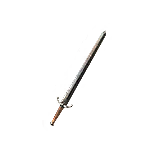
#1000 · 武器 · 剑
着陆之剑
物理攻击 75斩击倍率 100硬直 99击退 99
用轻巧且结实的材料打制的剑 优点是可以灵巧地进行攻击
共 1091 件装备，1091 件直接从游戏图集裁剪；名称、重量、攻防与抗性来自 PAK 内数据。

用轻巧且结实的材料打制的剑 优点是可以灵巧地进行攻击
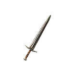
很常用的铁制剑 构造简单，购买价格低廉 作为旅行中的护身用品很受欢迎
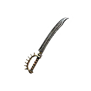
通过弯曲刀刃提升威力的剑 不仅锋利 还配有尖刺状的护手
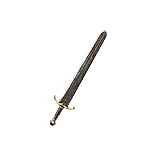
剑身宽且结实 能承受激烈碰撞 在残酷的战场上备受欢迎
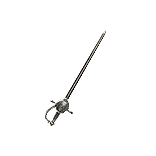
形状简洁的细剑 由柔软的金属锻造而成 强度也过硬
散发着强烈冷气的剑 冰冻的刀刃会瞬间夺走 受击者的热量 攻击附带冰属性
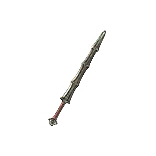
用特殊工艺为知名勇士 锻造的一把剑 波状刀刃可以行云流水般地 将敌人一刀两断
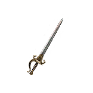
在维尔蒙德军中 只有兵长以上级别才可以佩戴的剑
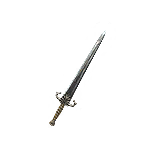
在维尔蒙德军中 作为普通士兵装备使用的剑
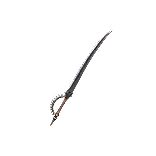
如同蔷薇一般优雅的剑 那与外表相反无比锋利的刀刃 能自如地将一切斩断
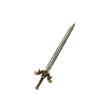
以刚猛之龙命名的剑 使用时体内会涌出强大无比的力量 发动不间断的攻击时威力会增强
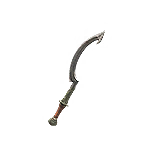
在巴达尔十分常见的军刀 尖端带有弯钩 可以应对多种情况
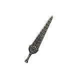
剑身非常宽的剑 特征为厚重的装饰与强力的斩击
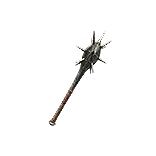
为了让逝者安息 施加了诚挚祈祷的锤矛 能对骷髅兵类的魔物 发挥出巨大威力
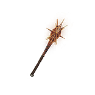
封入了火山中汹涌的 火焰之力的锤矛 它的一击如同岩浆一般滚烫 攻击附带炎属性
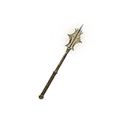
散发着神圣光辉的锤矛 以驱秽咒法祭炼金属十载而成 攻击附带圣属性
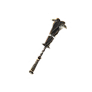
被加工成扭曲形状的 金属打击武器 由于形状特殊 缺乏经验之人无法善用
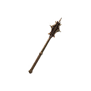
面对突进过来的对手 能准确痛击其要害的锤矛 能对牛头人类的魔物 发挥出巨大威力
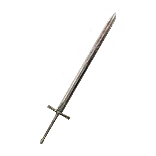
很常用的铁制大剑 结实且易于使用 最适合用来适应大剑的操作
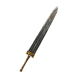
以坚固耐用为理念锻造的大剑 剑身中有三根铁芯 有着与重量相称的威力
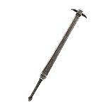
为用于前线的战斗而锻造的大剑 对剑尖进行特殊加工 提升了杀伤力
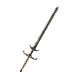
刀刃如火浪般密集细致的大剑 能剜伤目标 造成比外表更严重的伤害
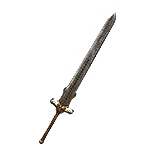
斩断和突刺能力都很出色的大剑 据说是挑战巨大敌人的勇士 精挑细选出的武器
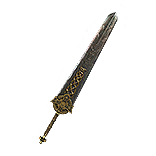
据说是一个家人被绑架的富豪 为了复仇请人制作的大剑 能对食人魔类的魔物 发挥出巨大威力
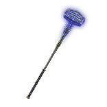
蕴含劈天惊雷力量的大锤 用力向下挥锤 可以发动如同轰雷一般强力的攻击 攻击附带雷属性
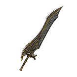
以刚猛之龙命名的大剑 龙牙般锐利的刀刃 甚至能撕裂天地 受到的伤害越多攻击力越高
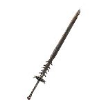
外观不祥的大剑 拥有与外观匹配的锋利程度 据说是将龙心的碎片 幻化成了剑的模样
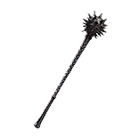
击打部分带有锐利尖刺的钢铁大锤 目标的身体会被尖刺剜入 并被其重量碾压粉碎
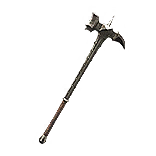
击打部分带有钩爪形状凸起的大锤 能对独眼巨人类的魔物 发挥出巨大威力
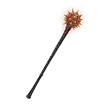
尖刺上带有火焰之力的大锤 受击者将被滚烫的尖刺撕裂 经受漫长的痛苦 攻击附带炎属性
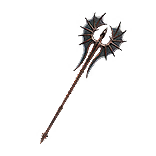
以空中飞龙为原型的大剑 能对龙类的魔物 发挥出巨大威力
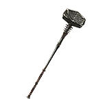
用特殊金属制造的大锤 硬度高威力强，十分沉重 适合用来炫耀过人的力气
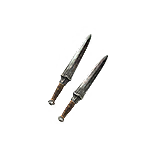
很常用的匕首 轻巧且易于使用
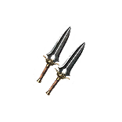
刀刃中央有一条凹槽的匕首 更易于维护 连续作战依旧能保持锋利
带有神奇花纹的古老匕首 原本似乎是矛的尖端 有记录表明曾在祭祀中使用过
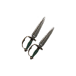
专门用于攻击重装目标的匕首 为了准确地瞄准厚重铠甲的缝隙 剑身扁平，尖端锋利
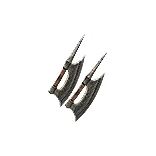
用长柄武器斧枪的前端 重新锻造而成的匕首 熟练者可以用其应对各种情况
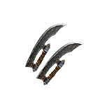
粗略加工的匕首 能对野狼类的魔物 发挥出巨大威力
利用从古代神殿中挖掘出的 长柄武器重新锻造而成的匕首 攻击附带雷属性
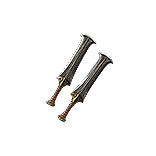
以刀尖宽度为特征的匕首 施加了特殊加工 会使受击者的伤口扩大
刀刃为新月形的锋利匕首 追求易用性将战斧加工而成的武器 能对人发挥出巨大威力
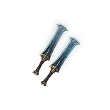
使用冰山出土的矿石锻造的匕首 刀刃上时常有一层薄霜 攻击附带冰属性
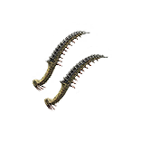
将蜥蜴人的皮、骨头、毒牙等 充分利用制成的匕首 攻击附带中毒的状态异常
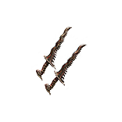
以凶猛的龙命名的匕首 拥有匹敌龙爪的凶猛杀伤力
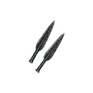
用传说被恶魔附体的长柄武器 打制而成的匕首 在突刺方面可以发挥出 无与伦比的特色
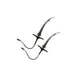
形状如同寻找水路的蛇的匕首 探测到宝箱后会发出光芒 仿佛在给予提示
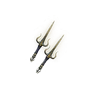
蕴含着神圣力量的匕首 制作方法、刀匠等一切信息都是谜 攻击附带圣属性
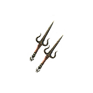
在巴达尔十分常见的匕首 为了在乱斗中方便使用 在制作上下足了功夫
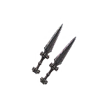
遍体装饰着骷髅的不祥匕首 据说热衷于黑魔法的人们 曾将其用在仪式中
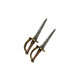
寄宿着汹涌奔流力量的匕首 力量会化作斗志流过全身 带来勇气和激昂
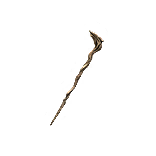
很常用的木质小杖 做工简单，因此中规中矩易于使用
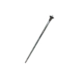
锻造加工过的铁制成的小杖 比木质小杖略重 但仍易于使用
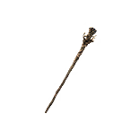
尖端镶嵌着蕴含魔力的宝石的小杖 易于上手，从初学者到熟练者 都在广泛使用
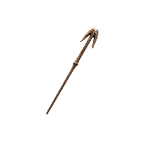
以鱼叉形状为特征的小杖 为了实现最大施放效果 形状根据魔力走向加工而成
镶嵌着与魔力共鸣的石头的小杖 吟唱魔法时魔力会大幅增强
召雷的铁制小杖 设计去繁从简，易于使用 攻击附带雷属性
可以高效使用魔法的小杖 以锋利的爪尖为首 所有设计都有凝聚魔法的效果
在巴达尔十分常见的小杖 蕴含着巴达尔传统的匠心
镶嵌着蕴含火焰的魔法石的小杖 攻击附带炎属性
静静闪耀着光辉的小杖 纪念曾畏惧月亮之力的人们 因为日食时月亮会遮蔽太阳
其颜色让人想到冬季湖泊的小杖 装饰着四头相互缠绕的龙 无比奢华，备受收藏家们的喜爱 攻击附带冰属性
用圣树加工而成的小杖 那清淡优雅的光辉能缓解痛苦 为人们指引前进的道路 攻击附带圣属性
施加了不祥装饰的诅咒小杖 据说顶端的骷髅来自 死于非命的高僧遗骸 攻击附带沉默的状态异常
嵌有觉醒者心脏碎片的小杖 仅限追随者装备该武器的情况下 在无法行动时可以自己复活
以刚猛之龙命名的小杖 蕴含着龙的力量 和使用者的魔力混合后 会产生巨大威力
用在极端环境下生长的树木 制作而成的小杖 顶端镶嵌着充满魔力的宝石
模仿森林地精制作的小杖 能对地精类的魔物 发挥出巨大威力
犄角形状的青铜大杖 犄角形状的尖端易于聚集魔力 适合新手使用
以光滑质感为特征的大杖 新月形状的尖端充满了高度魔力
仿佛枝条伸向空中的树木般的大杖 所有魔力都会充分转化为攻击
嵌有蕴含着炎之力宝石的大杖 据说宝石中寄宿着最初的火焰 攻击附带炎属性
形状为握心之爪的大杖 镶嵌在顶端的稀有宝石虽小 但拥有增幅魔力的功能
以太阳形状装饰为特征的大杖 充盈的生命力与魔法融合 可以施放巨大的魔法攻击
以刚猛之龙命名的大杖 超越人智的意志流过全身 使装备者可以使用威力巨大的魔法
用圣树制成的大杖 象征着打败长夜的希望之翼 攻击附带圣属性
用活生生的诅咒荆棘制成的大杖 据说原本是一根在 高级魔法师遗体内扎根的红色荆棘 攻击附带沉默的状态异常
据说在龙体内吸收了瘴气的大杖 那龙死后仍凭怨念继续行动 只有可以承受 强大负面力量的人才能使用
笼中封印着魔力之源的大杖 会敏锐地配合施术者的精神状态 生命越高攻击力也随之增加
扭曲成螺旋形状的钢铁大杖 以独特的设计风格 展现出漩涡般上升的魔力走向
象征高贵的百兽之王狮子的大杖 攻击附带雷属性
贴有合金的木弓 兼具高强度和易于操作的形状
用狼皮包裹强化过的弓 有着出色的耐久力，且保养简便
用精选树木制成的弓 十分结实，且具有弹力 射程距离也足够长
加工罕见魔物的尖牙制成的弓 流通量少，性能强 被称作梦幻般的武器
由卓越的精灵工匠制造而成的弓 为提升使用者的注意力以及 与弓的配合度，设计毫无冗余
用高密度木材和青铜组合制成的弓 重心稳定，因此易于瞄准
以刚猛之龙命名的弓 同时具备龙的力量与柔软
穷工极巧的铁弓 虽有一定重量，但十分稳定
装饰有魔兽雕金的弓 能对狮鹫类的魔物 发挥出巨大威力
包裹着神圣动物皮毛的弓 能对奇美拉类的魔物 发挥出巨大威力
用魔兽的外皮和肌纤维制成的弓 兼具刚性与弹性 射出的弓箭将以令人惊异的威力 贯穿猎物
精灵用长在极地的植物加工而成的弓 利用金属强化芯材增加重量 从而加强了反弹力 既具有柔性又不乏强大的威力
以刚猛之龙命名的大弓 据说射出的弓箭上 寄宿着强大的龙之力
高密度木材和铁组合制成的弓 射穿靶子的精度之高，广受好评 能对鸟身女妖类的魔物 发挥出巨大威力
出处不明的弓 明显不是出自人类之手 虽然会增加消耗的体力 但用该武器给予致命一击 能获得大量经验值
加工传说中的九头蛇皮 制成蛇头模样的弓 表面施加独特的处理 拿在手里温润称手
新手也很容易操作的魔道弓 经过特殊加工 蕴含着强大的魔力
仿佛张开白色翅膀的鸟形魔道弓 攻击附带冰属性
坚固金属特殊加工制成的魔道弓 使用者的每一点魔力 都可以转化为弓箭的威力
以刚猛之龙命名的魔道弓 据说寄宿着幻化成魔力的龙息
使用了双重螺旋设计的魔道弓 能对人发挥出巨大威力
使用了两种不同金属的魔道弓 看上去笨重且复杂 实际有着出色的精密度和强大的威力
用神圣古木制作而成的魔道弓 虽然受到的伤害会增加 但只要不动就能逐渐恢复生命
形状为恶魔勾爪的魔道弓 据说只要拿在手上 就会被讨伐恶魔的执念所束缚
不祥之龙形象的魔道弓 袖珍龙翼的设计十分罕见 看上去仿佛将龙封印了一般 能对龙类的魔物 发挥出巨大威力
带有铜板装饰的魔道弓 能帮助使用者集中魔力 稳定弓箭的魔力和弹道
中规中矩的双头剑 魔法和物理的攻击力十分均衡 易于使用
很有分量的双头剑 使用越熟练 用起来越锋利
外形粗犷的双头剑 剑柄上附带的小刺可以造成 令目标不悦的划伤 能对地精类的魔物 发挥出巨大威力
将部分魔力转变成炎之力的双头剑 攻击附带炎属性
雕有精致草木花纹的古老双头剑 寄宿在刀刃上的斗志会 赋予装备者 提升少量防御力
形似天空中飞舞的狮鹫的双头剑 那如同尖锐的喙一般弯曲的刀刃 能造成比剣戟更高的杀伤力
切断能力极强的双头剑 锋利的刀刃可以一刀斩断骨头 能对蜥蜴人类的魔物 发挥出巨大威力
有着如同冰霜落下一般 精美雕刻的双头剑 通过魔法冷气得到增幅 攻击附带冰属性
通过捶打般的斩击才能 发挥出真正价值的特殊双头剑 剑锋的装饰似乎是 某种生物的脊柱制品
以传说中的翼龙林德蠕龙 为原型设计的双头剑 突刺和斩断能力强，极其迅敏的 杀伤力让使用者陶醉其中 发动不间断的攻击时威力会增强
具有基础性能的香炉 将焚香的烟雾撒向四周 迷惑吸入烟雾的对象 缺乏打击力，让人心有不安
设计精巧的香炉 有着直径各不相同极具特征的导管 吸入从中涌出的烟雾 会产生深远的幻觉
点缀了高纯度金银的香炉 构造精细的导管里会冒出 高度浓缩的烟雾
梦幻魔兽外形的香炉 特征是外表纤巧，却使人毛骨悚然 具有神奇的作用 每次攻击敌人时会增加少量金钱
本体下部布满尖刺的香炉 香炉巧妙的空洞构造 可以让烟雾更高效地溢出
具有独特红龙设计的香炉 精细的表面工艺起到整流作用 像是能根据动作来揣测 使用者的意图并喷出烟雾
圆形盾牌 大小和形状使其方便使用
很常用的铁制盾牌 虽然结实，但有着相当的重量
防守与机动性兼备的小型盾牌 凭借高超的制作技术 虽为金属制品但轻巧且平衡性优越
维纶沃斯军队 高级士兵配备的盾牌 通过纹章能在战场上判断所属军队 有助于提升士兵的士气
巴达尔军队 高级士兵配备的盾牌 十分坚固，有着易于操作的形状
用冰山上的稀有矿石制成的盾牌 高雅的光辉十分美丽 受到高级骑士的喜爱
授予杰出的巴达尔士兵的盾牌 以表彰他们的表现 为了扩大惯用手的可动范围 设计成了独特的形状
以刚猛之龙命名的魔道盾 用蕴含魔力的龙鳞制成
以上下点缀的尖刺 与威严眼睛般的宝珠为特征的盾牌 使见者退缩，使用者获得 直面困难的力量
以刚猛之龙命名的盾牌 其牢固可以匹敌强韧的龙躯 增强使用者的雄心
表面磨得锃亮的特殊盾牌 几乎能映照出敌人的模样 具有反弹异形力量的能力 正符合其名“以牙还牙”
旅人披在身上的斗篷 由皮毛制成，保温能力强
衣摆点缀着流苏的披肩 虽然在战斗中容易损坏 但也别有一番韵味
粗线斗篷 为方便在弄脏后清理 只做了简单的加工
柔软的长布围巾 在前往北方的长途旅行中至关重要
衣摆设计很有特点的斗篷 披上就会平添一份高雅
披在肩膀周围的斗篷 使用长兵器时不会碍事
实用的防寒斗篷 岁月的沉淀增添一分韵味
奖励为国奉献者的披肩 如今也有人将其卖了换钱 甚至有商人售卖
礼服士兵披在身上的披风 采用不沾雨露的布料
用栖息在瓜耶科山脉的 孔雀的羽毛制成的披风 特征是那抹深邃的蓝色
用长毛皮制作的披肩 使用了大量从野狼身上剥下来的皮
用水生魔物皮革制成的斗篷 威风凛凛彰显豪杰风采
传说中古代觉醒者之王常用的披风 据说出生在异国的王 思念着回不去的故乡 故以思乡之情命名
有着不凡风度的披风 似乎是某个觉醒者常用的珍品 但事实是否如此还有待商榷
风格从容的披风 能让获胜的战士看上去更加耀眼
装饰着大羽毛的长披肩 披上后行为举止会自然而然变好
花纹很有特色的披肩 营造出了独特典雅的氛围
手感光滑的斗篷 给人诚实的印象
触感凉爽的围巾 在湿度高的地方使用会很舒适
进行了耐割处理的长披风 同时不失柔软性 用大型武器时也不容易缠在武器上
着重加厚肩部的斗篷 具有优秀的调整湿度功能 在残酷的环境下才能发挥出 真正的价值
据说是远古圣人 大祭司伊德雷亚姆四世留下的袈裟 也有专家称是其子孙做的仿制品
细长的披肩 适合带刀之人
维尔蒙德发放给远征军的等身披风 是军人的证明 能恰到好处地修饰身形
鲜艳的蓝色披风 要与之相称 最好展现出威风堂堂的姿态
结实的织布围巾 飘浮着的微香令人怀念
领口点缀着水鸟羽毛的斗篷 为旅途增色添彩
赠送给在学问或医疗等方面 做出贡献之人的披肩 虽然是知识分子的证明 但无法确定此物是否属于本人
赤狼毛皮加工而成的斗篷 如果有普通人能自己弄到手 那大可炫耀一番
暗色材料的斗篷 光即杂念之源，此斗篷可减少其反射
朴素的蓝布斗篷 该设计也与礼服相衬 受到所有职位军人的喜爱
染成茶绿色的斗篷 材料光滑 摸起来能使人平静
使用罕见的岩狼毛皮制成的斗篷 能锁住空气 防止热量流失
披肩上带有高级材料制成的流苏 只要留心不弄脏它 便可以避免因粗心受伤
无名雷鸟每七年飞来一次 该披风是用这种鸟的黑色羽毛制成的 保湿性能优秀，还有静音效果
用多块龙族皮革制成的斗篷 彰显着无畏的勇猛
麻制大披风 习惯旅行的人也会作为寝具使用
嘉奖立下战功者的披风 据说王曾将其作为奖赏 赐予那些对扩大疆域做出贡献的猛将
颈部使用了兽毛的大披风 受到寒冷地区的驻军青睐
迷人的深蓝色布制长披肩 设计很适合粗野的战士
带有暗褐色花纹的披肩 似乎是某个贵族为了庆祝龙征军成立 而送给指挥官的礼物
用耐寒布编制而成的斗篷 有了它即使气温突降也无需担心
藏青色的魔物皮革围巾 适合它的人都是旅行老手
用上乘织布与毛皮制成的披风 穿戴起来十分舒适 为穿戴者带来自信与威严
用罕见魔物的皮制成的披肩 制作它的初衷是为了 用在正式的室内环境中
厚重的黑色皮革披风 重量适中，可以端正姿态 振奋萎靡的精神
使用了高级布料的斗篷 似乎是某个贵族 为了巡视领土而定制的
远古时代的披风 有些许褪色但布料十分高级 以勇敢驰名的觉醒者曾经穿着过
轻巧结实的皮制斗篷 使用了十分稀少的翼龙族羽毛
用爬虫类的皮制作的面具 王宫舞会的参加者 会戴上面具隐藏身份
用火蜥蜴的皮加工而成的面具 王宫舞会的参加者 会戴上面具隐藏身份
遮盖嘴部的简易布料 防止尘土进入
绘有双狼相对图案的手帕 图案根据光照强弱显现，引人注目 适合遮挡容貌
覆盖颈部的厚实布料 防止漏出呼吸声 有助于隐蔽气息
高级皮革制成的眼罩 除了自我满足之外没什么其他效果 但讲究之人自然会注重外表
带有琥珀花纹镜框的眼镜 能给人留下高贵的印象 如果因为眼神凶狠而感到自卑 可以用它来改变给人的印象
带有细链的单片眼镜 能给人留下知性的印象 但是否相称因人而异
架在鼻子上的眼镜 佩戴感轻巧舒适 但可能会被评价为矫揉造作
用魔物幼皮鞣制而成的口罩 防尘效果出色 遇上暴风或途径多尘地区时很是实用
皮制眼罩 因意外战斗进入暗处时 露出遮盖的眼睛可以迅速适应黑暗
装饰着除魔邪眼的眼罩 没有事物比它更适合 改变杀气腾腾的气氛
在贵族中流行的装饰品 可以增强知性的感觉 但作为防具作用微乎其微
镜片很薄的时尚眼镜 如果想改变样貌 试戴一下也不失为一种乐趣
镜框十分独特的眼镜 即便身处战场也想从容不迫地 关心眉眼上的装饰
充满力量的戒指 增加少许最大生命值
充满力量的戒指 增加适量最大生命值
充满力量的戒指 增加少许最大体力值
充满力量的戒指 增加适量最大体力值
充满力量的戒指 增加少许最大装备重量
充满力量的戒指 增加适量最大装备重量
充满力量的戒指 增加少许最大生命值、 最大体力值、最大装备重量
呼应灵魂施放力量的戒指 增加攻击力
呼应灵魂施放力量的戒指 增加防御力
呼应灵魂施放力量的戒指 增加魔法攻击力
呼应灵魂施放力量的戒指 增加魔法防御力
呼应灵魂施放力量的戒指 减轻受到的斩击属性伤害
呼应灵魂施放力量的戒指 减轻受到的打击属性伤害
呼应灵魂施放力量的戒指 减轻受到的炎属性伤害
呼应灵魂施放力量的戒指 减轻受到的冰属性伤害
拥有神奇力量的戒指，可祛除灾厄 彻底防止追毒的状态异常值积蓄
拥有神奇力量的戒指，可祛除灾厄 减少睡眠的状态异常值积蓄
拥有神奇力量的戒指，可祛除灾厄 彻底防止睡眠的状态异常值积蓄
拥有神奇力量的戒指，可祛除灾厄 彻底防止濡湿的状态异常值积蓄
拥有神奇力量的戒指，可祛除灾厄 彻底防止浸油的状态异常值积蓄
拥有神奇力量的戒指，可祛除灾厄 彻底防止沉默的状态异常值积蓄
拥有神奇力量的戒指，可祛除灾厄 减少石化的状态异常值积蓄
拥有神奇力量的戒指，可祛除灾厄 彻底防止石化的状态异常值积蓄
拥有神奇力量的戒指，可祛除灾厄 彻底防止延烧的状态异常值积蓄
拥有神奇力量的戒指，可祛除灾厄 彻底防止冻结的状态异常值积蓄
拥有神秘力量的戒指，使灵魂动摇 提升少量从打倒的敌人身上 获得的经验值
拥有神秘力量的戒指，使灵魂动摇 提升少量从打倒的敌人身上 获得的职业点数
拥有神秘力量的戒指，使灵魂动摇 打倒敌人时恢复生命
拥有神秘力量的戒指，使灵魂动摇 缩短魔法的吟唱时间
拥有神秘力量的戒指，使灵魂动摇 减少最大生命值 大幅度缩短魔法的吟唱时间
拥有神秘力量的戒指，使灵魂动摇 提高强韧度 不易踉跄、不易被吹飞
拥有神秘力量的戒指，使灵魂动摇 减少用盾牌承受攻击时消耗的体力
拥有神秘力量的戒指，使灵魂动摇 盾牌反弹成功后暂时提高攻击力
拥有神秘力量的戒指，使灵魂动摇 负重越低，攻击力越高
拥有神秘力量的戒指，使灵魂动摇 生命大幅减少时 一段时间内逐渐恢复生命
拥有神秘力量的戒指，使灵魂动摇 生命所剩不多时 提升攻击力
拥有神秘力量的戒指，使灵魂动摇 生命值全满时提升攻击力
充满可疑波动的戒指 容易成为敌人的目标
充满力量的戒指 提升体力恢复速度
充满力量的戒指 攻击容易使敌人踉跄或被击飞
充满力量的戒指 离敌人越近，弓箭的攻击力越强
拥有神秘力量的戒指，使灵魂动摇 减轻正面受击时的伤害 提升背面受击时的伤害
充满力量的戒指 提高从背后攻击敌人时的伤害
拥有神秘力量的戒指，使灵魂动摇 暂时提高救起的追随者的防御力
拥有神秘力量的戒指，使灵魂动摇 提升使用恢复道具时的恢复量
荡漾着温柔微光的戒指 与某位魔导师之女托莉夏的情谊证明
充满可疑波动的戒指 所有攻击都会变成最弱的攻击
荡漾着神秘光泽的戒指 能加深和赠与人之间的情谊 装备时与人交流可给对方留下好印象
结实的布制头部防具 材料易于获得 在各地得到了广泛使用
保护整个头部的金属头盔 简朴且因此易于保养
构造简单的头盔 施加了耐刮处理
装饰着金属叶子的头冠 提高施术者的注意力
铁制的普通头盔 面部防护能保护眼睛免受 出其不意的攻击
鸟兽形象的头盔 那凶狠的外形赋予佩戴者 比实际防御力还高的自信心
设计精致且大胆的头盔 从面部防护中窥见的目光 会使对峙者畏惧
十字和羽毛的设计使头盔 看起来英勇非凡。虽然视野狭窄 但覆盖整个面部的安心感更重要
普通的链甲头巾加上帽子做的头盔 防御性能比外表更高 老手剑士也给予认可
让人联想到魔物下颚的头盔 不祥的设计或是为了催生残暴之心 即便配戴者们并不曾期望
带有双角的头盔 夸张的轮廓似乎 有一些振奋人心的效果
模仿独眼巨人制成的头盔 面对强大的魔物 人类不只感到厌恶，也会心生崇拜
用野狼皮毛制成的头部防具 御寒性能优秀 对小型魔物也有一定震慑效果
由魔物的骨头和尖牙制成的头冠 据说是战士雷欧纳多的遗物 其人在西方曾被称为“歼灭之王” 而受人畏惧
覆盖整个头部的大头盔 具有与威风外形不相上下的防御力 能给佩戴者带来极大的自信
正面装配了冲天凸起的头盔 对身处逆境也不忘雄心的战士而言 这一设计正合其意
在古阿加曼，据说有一支 以无谋之勇而闻名的骑兵团 该头盔是根据文献还原的成果
用耐磨损材料制成的兜帽 长年累月的使用会生出独特韵味
带有巨大帽檐和羽毛的帽子 令人印象深刻 如果战斗就是人生 那么需要点缀方能享受
包裹着染色布料的头部防具 巴达尔制的染料有防腐效果 能经受长期风吹雨打
额部有十字纹章的头盔 由兼任神职的匠人制成 施加了战斗胜利的祈祷
上古觉醒者的遗物头盔 该觉醒者曾被尊为“龙骑士” 由龙骨制成
后檐宽大的帽子 使用魔物血染制的鞣皮制成 耐火性优良，端正的外观无愧于 “死亡之花”之名
平淡无奇的头部防具 虽有一定防御力 但不可过度信赖
包裹头部的柔软兜帽 花纹象征着光之加护 能在使用魔法时帮助集中精神
形状便于使用的头部防具 在魔法使用者之间广泛流通
内里做了起毛处理的兜帽 基础性能好 便于在各种场合使用
用红线绣着辟邪之龙的兜帽 人们献上的祈祷时而会带来幸运 时而却带来不幸
形似夭矫缠绕之蛇的头冠 据说因动摇而精神错乱时 此头冠有助于恢复
兜帽的设计使人联想到集中运气 瞄准敌人射击时 这种自我投影至关重要
法衣的兜帽，仪式中也会用到 洁净的布料有利于维持 吟唱所需的“静谧之心”
祭司用具外形的头冠 凸起部分为魔力共振装置 可以消除吟唱时的杂念
带有魔物鳞片形金属板的头部防具 凉爽的佩戴感有利于提高注意力
高级布制兜帽 施加了净化之术 营造出一种庄严的气氛
装有宝石的头环 通过将气集中在额部 实现稳定的魔力练成
装饰有“智慧魔物”羽毛的帽子 能高效传导魔力 施术者都希望能悠然地佩戴它
形状特异的兜帽 代表“头戴智慧” 为实现最高效的魔法吟唱 对头脑周围的魔力进行整流
外形为魔导师贾·努阿的脸的兜帽 据说贾·努阿已参透五元素的真理 穿戴者虽无法具备那份威严 但想必会获得莫大的自信
施加了祈祷的头部护具 清幽的香气有助于施术者 稳定精神、激发活力
额部绘有眼睛的面具 包含着“第三只眼”看透真理的寓意
装饰着稀有地狱鸽羽毛的头部防具 具有开运功效 羽毛很难获得，在捕获量少的年份里 市场上常充斥着赝品
覆盖整张脸的薄布兜帽 施加了祈祷的布料上绘有大量 迷惑他人的邪眼
将魔物的头骨和尖牙组装起来 形似祭坛的异形头盔 若畏惧与怪异对峙 不妨自身化为怪异
头盔上装饰着用于咒术的鸟类羽毛 想起这个形状 便可沉心静气地集中精神
布制帽子 如果想避免头部受到致命伤 至少戴上这顶帽子
覆盖后脑的兜帽 布料虽柔软，但受到冲击时 一定程度上可以化解伤害
适合探索山岳的头盔 前额的金属挡板能保护重要的眼部
装饰有鸟尾的帽子 随风飘扬的羽毛宽慰暴戾的内心 这是除了坚固一无是处的装备 所不具备的魅力
带有鸟兽装饰的精悍头盔 使用魔物的羽毛和肌纤维制作 拥有惊人的强度
形似空中霸主狮鹫的头部防具 使用了异常抗性极高的羽毛
流畅华丽的羽饰头部防具 使用年轻琥珀焰龙的皮革 经过特别的手法鞣制加工而成
遮盖口部的布制装具 至少可以防尘
硬皮制的头盔 通过铆钉提升了强度 弓箭手标准装备
硬质皮革覆盖全头的头盔 保护战斗中容易受到攻击的颈部
覆盖头顶、嘴部、颈部的头部防具 通过织入铁芯提升了整体强度
以凶猛的狮面和狮鬃为原型的头盔 可以鼓舞佩戴者 给予不畏强敌的勇气
轻薄却有效防割的头部防具 光滑的表面质地可以吸收声音 隐藏佩戴者的呼吸声
以寓言里鸟人族法尔科尼亚头部 为原型的头盔 其名源于风一般的迅捷
外形如同双角魔物的头盔 兼具精美装饰和整体强度 作为武装用具值得信赖
包裹着高强度布条的头部防具 内部有空间 可以有效地缓冲冲击
纤细圆环形的头盔 能更加高效熟练地聚集魔力
包裹头部的柔软兜帽 如林中叶影一般温柔地保护眼部
额部嵌有辉石的头冠 蕴含的强力祈祷能让佩戴者 进入深度冥想状态
从古流传至今的鸟兽形象头盔 对空中魔物的敬畏和憧憬 反映在细节处理上
将金属板和遮光布组合的护眼防具 锁定目标的视线难以捉摸
由兽人体毛制成的精致面罩 人类佩戴后 会被他人当作兽人
士兵佩戴的普通头盔 没什么特别的性能
让人联想到愤怒兽人的头部防具 隐藏表情和嘴部 使敌人无法读懂佩戴者的想法
皮制面罩，使用栖息在 北方阿雷斯山麓的牛的皮制成 耐磨损，久用可生出独特韵味
漆黑染料染制而成的蒙面装具 因肩部以上全部被黑色覆盖 仿佛融入黑暗一般 别名“无头”
遮盖嘴部，用于仪式的薄布面罩 幻术师要想隐藏气息 首先最好要遮住嘴唇
染成暗夜黑的布带制头部防具 吸收光和声音 最大限度消除佩戴者的气息
装饰着极其华美羽毛的头部防具 以一种怪鸟命名 传说它曾救勇者于危机之中
后檐宽大头顶尖耸的帽子 有助于集中魔法
以宝石象征南天诸星的装具 使用巨大魔力时起到护身符的作用
饰有两对口咬红玉之蛇的头冠 有防止魔力的反转或反噬 消除灾厄之意
简洁的金属环头冠 额部镶嵌着 薄暮中闪耀明星一般的宝石
配有宝石和羽毛装饰的头冠 仿照“飞翔灵知”制作 祈祷作出决定时沉着冷静
覆盖遮掩整个头部的防具 隐藏表情和视线，彻底“消除自我”
用金环支撑着辉石的头冠 关注额头处的“心眼” 施术之时则不会动摇
军人用的朴陋头盔 保护脖子的同时确保前方视野
配有巨大犄角的异形头盔 好似怒气化做实体般的形状 在魔物面前也毫不逊色
廉价的铁制盔甲 面对魔物时让人略微心有不安
金属线编织而成的盔甲 虽然朴素，但防割效果好
结实的铁片组合而成的盔甲 起初也许穿不习惯 但拥有符合外表的高防御力
贵族请人制作的外套 从设计中可以感受到其地位之高 布料高级针脚也十分美丽
覆有加工金属板的盔甲 非常坚固，缺点是重量略重
采用波状处理的盔甲 提升强度的同时实现了轻量化 为了方便挥剑 各个部位以有弹性的绳子连接
做工精致的盔甲 制作过程一丝不苟的绝佳防具 与其般配之人想必也是顶级战士
施加了精致装饰的盔甲 凭借活动部件的巧妙设计 行动时不会感受到重量
使用了大量硬金属的盔甲 设计奢华，乍看仿佛祭祀用品 但其强度无可挑剔
其装饰如同黑暗中目光一般的盔甲 让敌人感到畏惧 有着无可匹敌的防御力与机动性
金属板排列如鳞片的轻便盔甲 重点保护肩部和胸部
覆有大面积鳞片的盔甲 有化解斩击，避免致命伤的效果
护肩和多张薄板组成的上半身防具 可动范围较大，适合大剑使用者
札甲的一种 护肩部分带有凸起的“弯钩” 制作者傲慢地将其命名为“勇壮” 某种意义上令人安心
坚固易穿着，综合性能出色的盔甲 虽然适用于所有战场 但需要先适应其重量
瓦夏拉之鳞模样的盔甲 巴达尔南部古代神话中的水神瓦夏拉 据说能驱除邪恶排除万难
模仿多张面孔的奇异盔甲 据说自上古时起在英雄和觉醒者手中辗转 作为圣象雕刻其上 作为防具的基础性能很高
使用织入金属线的布料 仔细缝制的外套 方便活动，防割效果好
配色鲜艳的战斗上衣 设计十分时尚，仿佛礼服一般 出色的剪裁带来更强的防御力
以方便活动为理念制作的剑士上衣 迅速出剑衣服也不会凌乱
带有白金铆钉的神圣盔甲 似乎根据古代从属于教会的 觉醒者的轶事制作
饰有象征升龙和昼夜刺绣的长衣 用龙族的皮仔细缝制而成 华美但不纤弱 防御力和状态异常抗性无可挑剔
巧妙地组合血染的魔物皮等 多种材料制成的战斗服 略紧身的穿着体验能恰到好处地 让穿着者保持紧张
朴素的旅行装束 受到献身神职之人的喜爱
长袍的花纹包含对圣洁之光的祈求 厚实但富有弹性 不会妨碍吟唱咒语时的动作
具备防尘性与防寒性 且方便活动的长外套 很多人喜欢这种朴实的风格
细心缝制的上衣 衣长适中，不会妨碍到其他装备 因此受到很多人的喜爱
轻度劳动或探索山林时穿着的上衣 龙的刺绣十分引人注目 结实且方便活动
鞣制巨蛇魔兽蜕掉的皮 再包裹坚固皮布制成的上衣 宽松的剪裁让施术者感到从容
多种魔物皮革编织而成的长衣 使用越多越能适应施术者的魔力 提高积蓄魔力的效率
圣印刺绣的法袍 圣印可保护人免受龙的威胁 且不论其真伪 可以给使用魔法之人带来安全感
高级材料制成的巫师服 衣服上绘有祈祷法术花纹 吟唱高级魔法时可以给与施术者加护
提高魔力适应性的法袍 部分使用了魔物素材 可以抑制施术者魔力泄露
饰有传导魔力的丝线刺绣的法袍 可以帮助施术者集中精神
感知魔力的丝线朝着固定方向 缝制而成的外套 据说可以调停魔法输出 减轻施术者的精神负担
将连接装具优化为 魔力安定回路的盔甲 暴露在外的皮肤也是回路的一部分
用特殊染料浓重染制的上衣 从暗沉的血色中可以感受到 妙不可言的浓缩魔力波动
使用最高级的布料制成的法衣 虽为高级神职人员的服饰 但对魔力拥有自信之人也能与之相称
有魔法抗性的魔物皮 叠加多层制成的长衣 将施术者的魔力全数封入衣服内侧
幻术师的衣服 据说其人从所有“束缚”中解脱 并领悟了真理 当然，衣服里并未寄宿着力量
据说这是某个信仰山岳的僧人 修道时曾穿过的衣服 似乎露出腹部可以加深冥想深度
据说是知名咒术师 冥想时穿过的法衣 其名包含“从轮回中解脱”的寓意
正面绘有咒术花纹的法袍 穿戴纹章可提高自身法力
缝合了多种诅咒之物的法袍 据说使用了著名咒术师的裹尸布
据说是别名“大贤者”的 幻术师罗恩塔尔的法袍 法力无边，可以通过幻术 显现出遮山蔽河的巨龙
用轻便的布料制造的轻巧上衣 易于打理，适合行走森林时穿着
为弓箭手设计的马甲 设计考究，不会妨碍惯用手活动
用皮革和金属部件缝制的盔甲 惯用手一侧的护肩 装有皮质弹簧，可辅助拉弓
链状衣服与金属板组成的盔甲 构造简单，易于搭配其他武装 因此受到佣兵的喜爱
将多种魔物骨头加工成鳞片状 用特殊药液打磨的盔甲 静音性出色，不会被敌人察觉
高级匠人技艺打造的盔甲 其构造使得做出拉弓射箭的 一系列动作时，各个部位相辅相成
使用了多种魔物皮革的盔甲 充分发挥各个材料的优点 加工技术非常高超
布制上衣 便于活动，强度也尚可
金属片上贴附皮革制成的盔甲 部位破损时可以单独更换，十分方便
巴达尔风格的轻便盔甲 透气性佳 在多沙尘的地方也能保持舒适
融入黑暗的黑色盔甲 外部整体覆盖着强化皮革 可以承受各个角度的攻击
各个部位使用了兽皮与体毛的盔甲 其名源自猛兽源源不尽的生命力
内部织入细密金属纤维的战斗上衣 不会过分勒紧身体 长时间行军也不易疲惫
庞大但穿着感轻松的盔甲 内里的鸟毛会扩散受到的斩击
通过高精度的“配合”组成的盔甲 以毛发为单位调整各部位位置 实现了顶级的穿着性能
在异国享有战神之名的盔甲 可以调动穿戴者的能力 充分汇集全身的力量
外形流丽充满魅力的上衣 精心剪裁细致做工让人陶醉
运用高级技术将硬度和黏性各异的 材料组合制成的外套 会随着穿戴者的肌肉运动细微伸缩
森林居民喜爱的设计风雅的上衣 不会过度勒紧身体 但是贴合皮肤
使用多种魔物皮革和 稀少内脏部位打造的盔甲 各种材料的优点相辅相成 成品如同一件顶级工艺品
使用连续七天沐浴魔力的 特殊丝线制成的上衣 不会开线的缝纫技术无与伦比
轻薄的同时有着超高硬度的外套 装点在表面的鳞片是 削切上古魔物化石而得 是何种生物尚不明确
据说是森林居民精灵一族 制作的华丽衣物 与弓箭和魔法配合效果奇好
紧贴身体的轻薄胸衣 可以收紧腰间和腹部的肉
维尔蒙德制盔甲 向大量人群提供的通用品
提供给发掘现场使用的上衣 沾着汗水与尘土
质感独特的长衣 细密的纤维防污隔热并且吸光
将功能性贯彻到底的轻便盔甲 对于携带物品较多的人来说十分方便
提升了耐久力的拼接材料长衣 渗入丝线的药液 可以激发魔力积蓄的效果
不容易损伤的皮制长衣 魔法抗性高 在各种情况下有助于使用者的生存
用特殊布料织成的上衣 魔力积蓄在纤维之中 有极力抑制施术者魔力衰减的效果
叠加多层兽皮 用特殊工艺制成的服装 神奇反射如同魔力之海泛起的涟漪
以火龙之息为灵感的盔甲 一丝不苟的技术与素材 创造出无比精湛的成果 将其骄傲地命名为“完美火焰”
拥有细致刺绣的美丽上衣 内侧采用各种不同布料 极其舒适且便于活动
合金护肩和护胸部分 组合了布料的轻装防具 推荐对体术有自信的人使用
实现与穿戴者合为一体的盔甲 有着利落的机动性 突然改变姿势也不会感到重心不稳
闪耀神圣光辉的盔甲 因崇拜传说中的弓箭民族 “北风之民”的伟大战神祖先而制造
保护胸部等弱点且轻便的盔甲 便于活动的特性也提高了生存率
据说使用了临终魔物的皮 制作的装具 能调动出穿戴者肉体原本就有的力量
获得了特殊加护的盔甲 仅看外表难以想象 但它拥有战斗女神赐予的保护之力
设计粗犷的半身盔甲 是兽人武具匠人丹赫尔的杰作 虽冠以兽人之名，但人类也可以穿戴
散发艳丽光泽的法袍 使用从蝴蝶翅膀收集的鳞粉染制而成 据说该蝴蝶可以积蓄魔力
惹人怜爱但给人伶俐印象的轻便上衣 要想自如使用该防具 需要柔软的身体动作
在宫殿穿戴的正式上衣 如果不穿上这件衣服 在维纶沃斯城会被视为大不敬
使用稀有金属作为材料 提升了强度的盔甲 具有兼具强韧和柔软的“韧性”
农耕时也可以使用的足部装备 还算结实但不适合战斗
用金属线编成的盔甲 可以最低限度地防止刀伤
膝盖部分覆有金属的足部防具 进入山野时最好准备一副
组合两种皮革的厚实足部防具 适合在草木茂盛的山间行军时使用 适用于多种场合
膝盖和小腿覆盖金属板的足部防具 可以防住攻击要害的致命刀剑
外形好似猛禽利爪般的足部防具 从某种意义上说，强调视觉上的粗犷 而非穿戴舒适性无可厚非
整体施加波浪状加工的足部防具 不用担心膝盖被射穿 除非对手是相当了得的弓箭手
锁链和金属板组成的足部防具 设计重视的不仅仅是实用性 可以从中感受到制作者的挑剔
设计厚重的足部防具 鼓舞穿戴者 唤起将世间魔物踩在脚下的气概
精密组合的足部防具 高度配合身体动作 一旦习惯便不会介意其重量
适合长途旅行的足部防具 穿戴舒适 但恐怕难以应对斩击
重点保护膝盖下部的足部防具 习惯后会对那份重量感到安心
大腿到脚踝全部覆盖的足部防具 不用担心受到突袭 因此可以放心地大胆搏斗
膝盖部分施加魔物设计的足部防具 凸起的部分并无实际用处 但战斗没有那么简单
使用了多重金属板的足部防具 设计稳重扎实 即使身负重物也能站稳
设计让人联想到魔物的足部防具 外观粗犷但上脚很稳 易于穿着
正面覆盖鳞状金属片的足部防具 没有多余的装饰 易于和其他防具配合使用
上脚轻便的鞋子 鞋底做了耐磨处理 即便动作激烈也能轻盈跟脚
设计独特，惹人注目的足部防具 其价值只有懂得的人能够体会 有着无可取代的魅力
提升了贴肤度的足部防具 对于需要剧烈运动的职业来说 此功能十分实用
为战士设计的足部防具 膝盖和脚背装配强化金属板 提升了下半身的稳定性
正面刻有浮雕的足部防具 图案为东方传说中的魔物 奇异中带着一丝独特的神秘
普通的足部防具 比起光腿可以少沾一些土
防尘性出色的足部防具 适用于岩地、河流等 容易弄脏腿的地方
劳作时穿的足部防具的改良版 优化了材料，实现更高的耐久力 与良好的穿戴体验
上脚轻巧的靴子 足部没有多余的装饰 有助于提高注意力
简约但结实的鞋子 鞋底耐磨，适于在长途旅行中使用
魔兽蜕的皮鞣制而成的足部防具 平滑的布制裤脚掩在精致的护腿里
用装饰绳束起布制裤脚的足部防具 这也是防止寄宿在身体里的 祈祷之力由地面流失的法术
表面光滑的足部防具 不会产生细微的衣服摩擦 有助于集中精神吟唱魔法
为了防止魔力泄露浪费 净化了缝线的足部防具 施术者才能明白其可贵之处
连膝盖上方都能保护到的皮靴 其性能足以满足战斗和探索的需要
颜色不起眼的足部防具 优点是夜晚行军时不易被敌人发现
用特殊染料染制的腰布 呼应魔力而硬化的纤维 可以保护施术者的足部
染成血般深红色的皮制足部防具 强烈的紧绷感起初令人不适 但习惯后会逐渐上瘾并爱不释手
贴合腿部线条的轻薄足部防具 可化解压在膝盖和脚踝上的重负 从而减轻疲惫
含有毒素的魔物皮制成的围腰 加工时需要魔法帮助抵御毒素 故制作时需要消耗相应的魔力
修行中的僧侣使用的绑腿 布料中含有少量香料 有助于穿戴者集中注意力
皮革编制的足部装备 运动时通过适度伸缩包覆肌肉 促进血液流通
纤细的圣布重重包裹的绑腿 用密文刻着施术者应遵守的戒律
进行特殊祈祷时使用的围腰 一摇一摆也可转化为法力
含有祈祷的宝珠编成的足部防具 对施术者来说 强力的祈祷是最强大的精神支柱
鞋底略厚的靴子 在不平稳的地面上也能站稳
皮革鞣制而成的靴子 可以和任何装备搭配
独眼巨人腋部的皮 鞣制而成的足部防具 富有弹性，耐久性强
着地稳定的靴子 适合在山野间迅速移动
以森林居民的加工技术 制成的足部防具 卓越的重量平衡不会让人感到疲惫
魔物皮和金属板组成的足部防具 迈开腿时重心稳定 有助于提高命中精度
设计简单的靴子 将实用性贯彻到底，省去多余构造 受到许多旅人和探险家青睐
使用了金属板和兽毛的足部防具 即便在荒野受损，也容易修复
宽松舒适的足部防具 柔软灵活，剧烈活动也能保持造型
强化大腿部分的防御 脚踝做得细长的足部防具 采用行动时不会发出声音的构造
膝盖下方装配强化金属板的足部防具 重量平衡方面颇为考究 减轻了爬坡和跳跃时膝盖的负担
配有带钉防具的足部防具 方便活动的同时保护着弱点部位
宽松的足部防具 适合进入草丛或攀爬岩棚等 山地探索行动时穿着
关节和鞋底贴有结实部件的 足部防具。在不稳定的地形中 行动时能提供强力支援
具备轻便与耐久性的 魔物皮制足部防具 仿佛在空中起舞的脚步 被比作吹过断崖的旋风
据说是森林居民制作的足部防具 不仅具备实用功能 细节还彰显出高雅的品味
重视穿脱和保养简便性的足部防具 似乎也受盗贼和佣兵的喜爱
用胭脂染制的魔物皮足部防具 迅捷行动时灵活柔软 发力时坚硬稳固
优雅曲线造型为特征的足部防具 其名包含着久用不坏的自夸之意
材质具有弹性的足部防具 适合所有体格的人，受损也不显眼
用于行军的足部防具 没有值得一提的功能
材质粗糙的裤子 即使没有沾满泥土也很穷酸
质地柔软的裤子 减少无益的衣物摩擦 使走路声不那么引人注意
金属板加入衬垫提高了强度的 足部防具 硬度与重量十分平衡
用秘术提高了防御性能的腰布 据说布料和周围可以生成力场 反弹邪恶的力量
在宫殿穿戴的正式下装 如果不穿上这件衣服 在维纶沃斯城会被视为大不敬
提供给发掘现场使用的上衣 沾着汗水与尘土
材质粗糙的裤子 即使没有沾满泥土也很穷酸
特别采用金色涂装的着陆之剑 与普及版相比制作得更为锋利 也适用于战斗
特别采用金色涂装的圆盾 与普及版相比制作得更为结实 也适用于战斗
特别采用金色涂装的标准匕首 与普及版相比制作得更为锋利 也适用于战斗
特别采用金色涂装的木杖 与普及版相比带有更多魔力 也适用于战斗
特别采用金色涂装的槽纹弓 与普及版相比制作得更为柔韧 也适用于战斗
初出茅庐的冒险者们都戴着的指环 能略微增加防御力与魔法防御力
形如食指的剑 此剑也被称为诅咒之指 象征着打败剑锋所指之人的决心
形似空中投下光柱的剑 从阴云间隙射进的光芒 作为希望的象征而受到信奉 每当打倒恶魔之眼并吸收力量 武器性能与特殊性能就会发生变化
会诅咒持有者的剑 据说此剑虽能斩断一切 但若持剑者与其力量不相配 则剑身会主动刺穿持剑者
贝尔肯人使用的斧头 不仅能用它来击倒外敌 也能用来劈柴生火、处理猎物等 用途广泛
不知来自何处的剑 据说这是努力守护着一片大陆的人 所使用的佩剑
诺根自古流传的剑 在战争中 诺根民众向恶者 祈求生存之法后习得了剑术 据说这把剑正是恶者那柄剑的仿制品
使用诺根魔物的鳞片制作的剑 进化后的鳞片使得它能适应寒冷地区 对敌人造成伤害的同时夺取热量 能在不知不觉中让敌人身受重伤
贝尔肯人使用的斧头 不仅能用它来击倒外敌 也能用来劈柴生火、处理猎物等 用途广泛
不知来自何处的剑 据说这是努力守护着一片大陆的人 所使用的佩剑
诺根自古流传的剑 在战争中 诺根民众向恶者 祈求生存之法后习得了剑术 据说这把剑正是恶者那柄剑的仿制品
使用诺根魔物的鳞片制作的剑 进化后的鳞片使得它能适应寒冷地区 对敌人造成伤害的同时夺取热量 能在不知不觉中让敌人身受重伤
贝尔肯人使用的斧头 不仅能用它来击倒外敌 也能用来劈柴生火、处理猎物等 用途广泛
不知来自何处的剑 据说这是努力守护着一片大陆的人 所使用的佩剑
诺根自古流传的剑 在战争中 诺根民众向恶者 祈求生存之法后习得了剑术 据说这把剑正是恶者那柄剑的仿制品
使用诺根魔物的鳞片制作的剑 进化后的鳞片使得它能适应寒冷地区 对敌人造成伤害的同时夺取热量 能在不知不觉中让敌人身受重伤
以寒气强烈而闻名的利器 在冰冻刺剑当中也数一数二 敌人一旦中剑 其伤口就会布满冰霜 再也无法治愈
相传此剑曾斩杀神祇 环绕于剑身的黑炎 被认为足以焚尽整个世界 但其力量的来源早已无从追溯
相传此剑曾斩杀神祇 环绕于剑身的黑炎 被认为足以焚尽整个世界 但其力量的来源早已无从追溯
诺根自古流传的剑 在战争中 诺根民众向恶者 祈求生存之法后习得了剑术 据说这把剑正是恶者那柄剑的仿制品
在诺根遇到的追随者艾尔 过去受罗瓦尔赏赐的剑 这柄剑伴随艾尔一同来到异界 经历漫长岁月与无数战斗仍坚不可摧 让她实现了拯救主人的夙愿
刀身上呈现独特图案的仪仗剑 该图案描绘的是 在极北地区广受信仰的魔物 据说是在淬火之时使用特殊工艺 使其浮现于刀身之上
刀身上呈现独特图案的仪仗剑 该图案描绘的是 在极北地区广受信仰的魔物 据说是在淬火之时使用特殊工艺 使其浮现于刀身之上
刀身上呈现独特图案的仪仗剑 该图案描绘的是 在极北地区广受信仰的魔物 据说是在淬火之时使用特殊工艺 使其浮现于刀身之上
不知来自何处的剑 据说这是努力守护着一片大陆的人 所使用的佩剑
不知来自何处的剑 据说这是努力守护着一片大陆的人 所使用的佩剑
不知来自何处的剑 据说这是努力守护着一片大陆的人 所使用的佩剑
预警不死之龙将会出现的铁匠 为了与之对抗而打造的剑 尽管他炼出了一柄 足以与不死之身抗衡的利器 但却没有一个人把他的警告放在心上
预警不死之龙将会出现的铁匠 为了与之对抗而打造的剑 尽管他炼出了一柄 足以与不死之身抗衡的利器 但却没有一个人把他的警告放在心上
预警不死之龙将会出现的铁匠 为了与之对抗而打造的剑 尽管他炼出了一柄 足以与不死之身抗衡的利器 但却没有一个人把他的警告放在心上
预警不死之龙将会出现的铁匠 为了与之对抗而打造的剑 尽管他炼出了一柄 足以与不死之身抗衡的利器 但却没有一个人把他的警告放在心上
以觉醒者胸前伤口为原型的剑 自古以来有很多人模仿觉醒者 寻找着模仿他的方法
以古老高塔为原型的剑 高塔象征着人们与龙决战的信念 时至今日仍以各种姿态坐落于各地 每当打倒恶魔之眼并吸收力量 武器性能与特殊性能就会发生变化
发出黑红色光芒的不祥双手剑 剑刃渴求着鲜血 会让持剑者不停挥剑 直到吸取大量鲜血为止
足以砍断诺根大树的斧头 被打磨的不光是刀刃 刺尖与斧刃的锋端亦被磨得异常锐利 这种特殊设计能通过刺击与旋转 造成无法愈合的伤口
从历史长河中消失的队伍所用的大剑 那些为了守护自身归宿 而集结的强壮士兵们都爱用它
以收拢羽翼的邪者为原型打造的大剑 据说那位将剑术带到诺根的邪者 一挥剑便能劈碎冰块 人们为得到与他媲美的力量 便仿照他的形象打造了这把剑
使用老化并冻结的脊骨打造的大剑 剑身中央的脊骨能在刺入对手时 往对手体内注入冷气 快速促成肉体腐烂与坏死
足以砍断诺根大树的斧头 被打磨的不光是刀刃 刺尖与斧刃的锋端亦被磨得异常锐利 这种特殊设计能通过刺击与旋转 造成无法愈合的伤口
从历史长河中消失的队伍所用的大剑 那些为了守护自身归宿 而集结的强壮士兵们都爱用它
以收拢羽翼的邪者为原型打造的大剑 据说那位将剑术带到诺根的邪者 一挥剑便能劈碎冰块 人们为得到与他媲美的力量 便仿照他的形象打造了这把剑
使用老化并冻结的脊骨打造的大剑 剑身中央的脊骨能在刺入对手时 往对手体内注入冷气 快速促成肉体腐烂与坏死
足以砍断诺根大树的斧头 被打磨的不光是刀刃 刺尖与斧刃的锋端亦被磨得异常锐利 这种特殊设计能通过刺击与旋转 造成无法愈合的伤口
从历史长河中消失的队伍所用的大剑 那些为了守护自身归宿 而集结的强壮士兵们都爱用它
以收拢羽翼的邪者为原型打造的大剑 据说那位将剑术带到诺根的邪者 一挥剑便能劈碎冰块 人们为得到与他媲美的力量 便仿照他的形象打造了这把剑
使用老化并冻结的脊骨打造的大剑 剑身中央的脊骨能在刺入对手时 往对手体内注入冷气 快速促成肉体腐烂与坏死
用最高级的冰封脊骨打造的利器 在雪花大剑当中也数一数二 寒气自内向外包裹着刀身 能够从伤口侵入敌人体内 使其骨髓都为之冻结
相传此剑曾屠戮巨龙 为了消灭被真理支配的龙 某位觉醒者决定与邪恶合作 承载邪力的剑斩杀了巨龙 但这一举动成为了噩梦的开端
相传此剑曾屠戮巨龙 为了消灭被真理支配的龙 某位觉醒者决定与邪恶合作 承载邪力的剑斩杀了巨龙 但这一举动成为了噩梦的开端
以收拢羽翼的邪者为原型打造的大剑 据说那位将剑术带到诺根的邪者 一挥剑便能劈碎冰块 人们为得到与他媲美的力量 便仿照他的形象打造了这把剑
剑身刻有魔物图案的大剑 要呈现如此精细的图案 需要超出想象的火力 据说凭人类的技术与魔法无法做到
剑身刻有魔物图案的大剑 要呈现如此精细的图案 需要超出想象的火力 据说凭人类的技术与魔法无法做到
剑身刻有魔物图案的大剑 要呈现如此精细的图案 需要超出想象的火力 据说凭人类的技术与魔法无法做到
从历史长河中消失的队伍所用的大剑 那些为了守护自身归宿 而集结的强壮士兵们都爱用它
从历史长河中消失的队伍所用的大剑 那些为了守护自身归宿 而集结的强壮士兵们都爱用它
从历史长河中消失的队伍所用的大剑 那些为了守护自身归宿 而集结的强壮士兵们都爱用它
与在极北地区施行仁政的觉醒者 一同奔赴战场的兵团所装备的大剑 饰有展开巨大双翼的龙 以示其拥有足以与恶魔抗衡的力量
与在极北地区施行仁政的觉醒者 一同奔赴战场的兵团所装备的大剑 饰有展开巨大双翼的龙 以示其拥有足以与恶魔抗衡的力量
与在极北地区施行仁政的觉醒者 一同奔赴战场的兵团所装备的大剑 饰有展开巨大双翼的龙 以示其拥有足以与恶魔抗衡的力量
与在极北地区施行仁政的觉醒者 一同奔赴战场的兵团所装备的大剑 饰有展开巨大双翼的龙 以示其拥有足以与恶魔抗衡的力量
带有鸢尾纹章的匕首 象征着不被邪恶玷污的决心 也是对于疾速之神的信仰
以在空中飞舞的喜鹊为原型的匕首 喜鹊虽以偷窃行为为人熟知 但有时也会成为连接事物的桥梁 每当打倒恶魔之眼并吸收力量 武器性能与特殊性能就会发生变化
从刀刃渗出毒液的匕首 据说古代的暴君曾手持这把匕首 将政敌全数杀灭
人们在诺根使用的短剑 刀柄的设计彻底无视了握持之便 暗示它原是由战时长矛的矛尖所铸
诺根盗贼所用的刃钗 其护手并非用于抵剑压制 而是设计为便于夺取并破坏对手 刀剑的形状 因此士兵们都会避免与盗贼正面交锋
邪者遗留下来的怀剑 据诺根自古流传的记载 邪者曾为此地的民众带来了智慧
使用被冻死的魔物的骨头打造的短剑 骨头本身不具攻击性 但它有冻结空气中水分的特性 所以能持续形成锐利的冰刃
人们在诺根使用的短剑 刀柄的设计彻底无视了握持之便 暗示它原是由战时长矛的矛尖所铸
诺根盗贼所用的刃钗 其护手并非用于抵剑压制 而是设计为便于夺取并破坏对手 刀剑的形状 因此士兵们都会避免与盗贼正面交锋
邪者遗留下来的怀剑 据诺根自古流传的记载 邪者曾为此地的民众带来了智慧
使用被冻死的魔物的骨头打造的短剑 骨头本身不具攻击性 但它有冻结空气中水分的特性 所以能持续形成锐利的冰刃
人们在诺根使用的短剑 刀柄的设计彻底无视了握持之便 暗示它原是由战时长矛的矛尖所铸
诺根盗贼所用的刃钗 其护手并非用于抵剑压制 而是设计为便于夺取并破坏对手 刀剑的形状 因此士兵们都会避免与盗贼正面交锋
邪者遗留下来的怀剑 据诺根自古流传的记载 邪者曾为此地的民众带来了智慧
使用被冻死的魔物的骨头打造的短剑 骨头本身不具攻击性 但它有冻结空气中水分的特性 所以能持续形成锐利的冰刃
使用死亡魔物的骨头打造的利器 在雪晶当中也以寒气强烈而著称 用冰制成的刀身 能够利用敌人体内的水分 使自身更加锋利
相传此短剑曾屠戮巨龙 怀抱对真理的熊熊怒火制成的剑 让恶魔重新锻造之后 它甚至获得了足以屠龙的威力
相传此短剑曾屠戮巨龙 怀抱对真理的熊熊怒火制成的剑 让恶魔重新锻造之后 它甚至获得了足以屠龙的威力
从刀刃渗出血液的匕首 据说古代的暴君曾用它 除掉了所有政敌
从刀刃渗出血液的匕首 据说古代的暴君曾用它 除掉了所有政敌
从刀刃渗出血液的匕首 据说古代的暴君曾用它 除掉了所有政敌
邪者遗留下来的怀剑 据诺根自古流传的记载 邪者曾为此地的民众带来了智慧
拥有艳丽剑柄的短剑 剑柄形如鸟爪 握在手中会倍感愉悦 不禁想让它痛饮鲜血
拥有艳丽剑柄的短剑 剑柄形如鸟爪 握在手中会倍感愉悦 不禁想让它痛饮鲜血
拥有艳丽剑柄的短剑 剑柄形如鸟爪 握在手中会倍感愉悦 不禁想让它痛饮鲜血
诺根盗贼所用的刃钗 其护手并非用于抵剑压制 而是设计为便于夺取并破坏对手 刀剑的形状 因此士兵们都会避免与盗贼正面交锋
诺根盗贼所用的刃钗 其护手并非用于抵剑压制 而是设计为便于夺取并破坏对手 刀剑的形状 因此士兵们都会避免与盗贼正面交锋
诺根盗贼所用的刃钗 其护手并非用于抵剑压制 而是设计为便于夺取并破坏对手 刀剑的形状 因此士兵们都会避免与盗贼正面交锋
一位老人为了守护世人 抵御口喷瘴气的龙而打造的短剑 尽管此剑锋利无比 但却因龙并未出现 导致老人背上妖言惑众的罪名而遭流放
一位老人为了守护世人 抵御口喷瘴气的龙而打造的短剑 尽管此剑锋利无比 但却因龙并未出现 导致老人背上妖言惑众的罪名而遭流放
一位老人为了守护世人 抵御口喷瘴气的龙而打造的短剑 尽管此剑锋利无比 但却因龙并未出现 导致老人背上妖言惑众的罪名而遭流放
一位老人为了守护世人 抵御口喷瘴气的龙而打造的短剑 尽管此剑锋利无比 但却因龙并未出现 导致老人背上妖言惑众的罪名而遭流放
仿照花萼制成的剑 据说支撑着巨大花朵的花萼 非常适合辅助战斗的魔法师 因此受到喜爱
装饰有候鸟的杖 以候鸟启程远方的自由心性 为原型制作而成 每当打倒恶魔之眼并吸收力量 武器性能与特殊性能就会发生变化
镶有四条龙的杖 为了与龙战斗，自身也须化龙 据说此杖便是基于这一研究 制作而成的
由灵木制成的钩杖 以人迹罕至的极寒之地的 老紫杉为原材料 枝干即便受厚雪积压也不折断 曾作为力量的象征受人崇拜
象征飞鸟破笼而出的杖 其造型早已超越了人类的逻辑 对寻求真理之光的魔术师而言 它被视为一种象征
呈现了邪恶扭曲形状的杖 那位教授诺根居民魔法的邪者 最初传授的便是实现愿望的禁术 据说此术已失传 至于失传的原因就不得而知了
使用古老地层的冰制成的杖 部位不同，断面各异 象征着雪花的各种形态 曾被用于研究与雪融为一体的秘术
由灵木制成的钩杖 以人迹罕至的极寒之地的 老紫杉为原材料 枝干即便受厚雪积压也不折断 曾作为力量的象征受人崇拜
象征飞鸟破笼而出的杖 其造型早已超越了人类的逻辑 对寻求真理之光的魔术师而言 它被视为一种象征
呈现了邪恶扭曲形状的杖 那位教授诺根居民魔法的邪者 最初传授的便是实现愿望的禁术 据说此术已失传 至于失传的原因就不得而知了
使用古老地层的冰制成的杖 部位不同，断面各异 象征着雪花的各种形态 曾被用于研究与雪融为一体的秘术
由灵木制成的钩杖 以人迹罕至的极寒之地的 老紫杉为原材料 枝干即便受厚雪积压也不折断 曾作为力量的象征受人崇拜
象征飞鸟破笼而出的杖 其造型早已超越了人类的逻辑 对寻求真理之光的魔术师而言 它被视为一种象征
呈现了邪恶扭曲形状的杖 那位教授诺根居民魔法的邪者 最初传授的便是实现愿望的禁术 据说此术已失传 至于失传的原因就不得而知了
使用古老地层的冰制成的杖 部位不同，断面各异 象征着雪花的各种形态 曾被用于研究与雪融为一体的秘术
使用古老地层的冰打造的利器 在冻结冰杖当中也数一数二 从太古时代以来就从未融化的冰 仿佛把无数雪花结晶融为一体 将神秘的寒冬包裹其中
相传曾有人以此杖弑子 某位声名显赫的魔术师 因察觉孩子的才华而误入歧途 他向恶魔出卖灵魂，失去了一切 留下的唯有这根杖
相传曾有人以此杖弑子 某位声名显赫的魔术师 因察觉孩子的才华而误入歧途 他向恶魔出卖灵魂，失去了一切 留下的唯有这根杖
呈现了邪恶扭曲形状的杖 那位教授诺根居民魔法的邪者 最初传授的便是实现愿望的禁术 据说此术已失传 至于失传的原因就不得而知了
有一座展翅魔物雕像的杖 蕴含着魔物的生命力 是极北地区的术士 在越冬仪式上使用的法器
有一座展翅魔物雕像的杖 蕴含着魔物的生命力 是极北地区的术士 在越冬仪式上使用的法器
有一座展翅魔物雕像的杖 蕴含着魔物的生命力 是极北地区的术士 在越冬仪式上使用的法器
象征飞鸟破笼而出的杖 其造型早已超越了人类的逻辑 对寻求真理之光的魔术师而言 它被视为一种象征
象征飞鸟破笼而出的杖 其造型早已超越了人类的逻辑 对寻求真理之光的魔术师而言 它被视为一种象征
象征飞鸟破笼而出的杖 其造型早已超越了人类的逻辑 对寻求真理之光的魔术师而言 它被视为一种象征
为了预测恶魔来袭 而研究禁术的学者们制作的杖 尽管他们用过人的学识 打造出了拥有超常力量的杖 但其研究却遭到嘲讽，而终被遗忘
为了预测恶魔来袭 而研究禁术的学者们制作的杖 尽管他们用过人的学识 打造出了拥有超常力量的杖 但其研究却遭到嘲讽，而终被遗忘
为了预测恶魔来袭 而研究禁术的学者们制作的杖 尽管他们用过人的学识 打造出了拥有超常力量的杖 但其研究却遭到嘲讽，而终被遗忘
为了预测恶魔来袭 而研究禁术的学者们制作的杖 尽管他们用过人的学识 打造出了拥有超常力量的杖 但其研究却遭到嘲讽，而终被遗忘
三蛇戏珠造型的大杖 以带来清水的河流为原型 为祈求丰收制作而成
以飞翔猫头鹰为原型的大杖 象征智慧的猫头鹰狩猎之姿 与具有攻击性的巫师一脉相通 每当打倒恶魔之眼并吸收力量 武器性能与特殊性能就会发生变化
形为低语之龙的大杖 不知来自何处的龙的低语 会让听到的人失去知觉
以盘蛇为原型制成的大杖 据说螺旋盘旋的蛇身 象征着改变样貌 迈向真理巅峰的魔法阶段
遗留在古老遗迹中的大杖 据说一位欲将自身伟业 留传后世的编纂者曾携带过它
以最初降临的邪祟为原型制成的大杖 通向邪祟像的螺旋形纹路 被认为是一条走向它的苦难之道 但无人知晓这究竟是攀升还是下行
象征着能令湖泊冻结的暴风雪的大杖 据说能在瞬间冻结湖面的暴风雪 在湖畔留下了美丽的结晶
以盘蛇为原型制成的大杖 据说螺旋盘旋的蛇身 象征着改变样貌 迈向真理巅峰的魔法阶段
遗留在古老遗迹中的大杖 据说一位欲将自身伟业 留传后世的编纂者曾携带过它
以最初降临的邪祟为原型制成的大杖 通向邪祟像的螺旋形纹路 被认为是一条走向它的苦难之道 但无人知晓这究竟是攀升还是下行
象征着能令湖泊冻结的暴风雪的大杖 据说能在瞬间冻结湖面的暴风雪 在湖畔留下了美丽的结晶
以盘蛇为原型制成的大杖 据说螺旋盘旋的蛇身 象征着改变样貌 迈向真理巅峰的魔法阶段
遗留在古老遗迹中的大杖 据说一位欲将自身伟业 留传后世的编纂者曾携带过它
以最初降临的邪祟为原型制成的大杖 通向邪祟像的螺旋形纹路 被认为是一条走向它的苦难之道 但无人知晓这究竟是攀升还是下行
象征着能令湖泊冻结的暴风雪的大杖 据说能在瞬间冻结湖面的暴风雪 在湖畔留下了美丽的结晶
象征着神话中的大暴雪的利器 在冰霜大杖当中也属于珍品 据说，昔日袭击诺根的暴风雪 使得湖泊化为了巨大的结晶
为破坏真理而制成的大杖 古代觉醒者认为应当破坏真理 便与恶魔共谋，制成此杖 但历史在此戛然而止 空留下逸闻与此杖
为破坏真理而制成的大杖 古代觉醒者认为应当破坏真理 便与恶魔共谋，制成此杖 但历史在此戛然而止 空留下逸闻与此杖
以最初降临的邪祟为原型制成的大杖 通向邪祟像的螺旋形纹路 被认为是一条走向它的苦难之道 但无人知晓这究竟是攀升还是下行
雕有展开巨大双翼之魔物的大杖 由某种魔物的皮加工而成 表面手感独特 每当注入魔力就会发出热量
雕有展开巨大双翼之魔物的大杖 由某种魔物的皮加工而成 表面手感独特 每当注入魔力就会发出热量
雕有展开巨大双翼之魔物的大杖 由某种魔物的皮加工而成 表面手感独特 每当注入魔力就会发出热量
遗留在古老遗迹中的大杖 据说一位欲将自身伟业 留传后世的编纂者曾携带过它
遗留在古老遗迹中的大杖 据说一位欲将自身伟业 留传后世的编纂者曾携带过它
遗留在古老遗迹中的大杖 据说一位欲将自身伟业 留传后世的编纂者曾携带过它
相信不死之龙会带来毁灭的贵族 为摆脱悲剧命运而打造的大杖 为制作大杖而倾尽所有的贵族 被身边的人看作疯子 而终被剥夺爵位并遭到监禁
相信不死之龙会带来毁灭的贵族 为摆脱悲剧命运而打造的大杖 为制作大杖而倾尽所有的贵族 被身边的人看作疯子 而终被剥夺爵位并遭到监禁
相信不死之龙会带来毁灭的贵族 为摆脱悲剧命运而打造的大杖 为制作大杖而倾尽所有的贵族 被身边的人看作疯子 而终被剥夺爵位并遭到监禁
相信不死之龙会带来毁灭的贵族 为摆脱悲剧命运而打造的大杖 为制作大杖而倾尽所有的贵族 被身边的人看作疯子 而终被剥夺爵位并遭到监禁
用装饰过的尖牙制成的弓 据说这种尖牙来自栖于北方 能将人一口吞下的恐怖怪物
用如天空般蔚蓝的结晶制成的弓 传说射向天空的箭 插着鱼掉了回来 每当打倒恶魔之眼并吸收力量 武器性能与特殊性能就会发生变化
颜色不祥的弓 制作时倾注的愿望 是要狩尽一切有生之灵
以霜鹿角制成的弓 寒冷地带的动物角因含水量少 质地更坚硬且不易弯曲 因此作为弓使用时需要更大的力量
自亡都流传而来的弓 据说那些故土尽毁的民众 曾持此弓奋勇作战
以邪祟之指为原型制成的弓 传说教授终结之法的邪者 无需弓矢 仅凭指尖迸发的妖气 便可取猎物性命
以在冰雪中找到的角制成的弓 该角进化成了感知器官 所以可助使用者在雪暴中也能锁定目标 是能适应环境的精密弓具
以霜鹿角制成的弓 寒冷地带的动物角因含水量少 质地更坚硬且不易弯曲 因此作为弓使用时需要更大的力量
自亡都流传而来的弓 据说那些故土尽毁的民众 曾持此弓奋勇作战
以邪祟之指为原型制成的弓 传说教授终结之法的邪者 无需弓矢 仅凭指尖迸发的妖气 便可取猎物性命
以在冰雪中找到的角制成的弓 该角进化成了感知器官 所以可助使用者在雪暴中也能锁定目标 是能适应环境的精密弓具
以霜鹿角制成的弓 寒冷地带的动物角因含水量少 质地更坚硬且不易弯曲 因此作为弓使用时需要更大的力量
自亡都流传而来的弓 据说那些故土尽毁的民众 曾持此弓奋勇作战
以邪祟之指为原型制成的弓 传说教授终结之法的邪者 无需弓矢 仅凭指尖迸发的妖气 便可取猎物性命
以在冰雪中找到的角制成的弓 该角进化成了感知器官 所以可助使用者在雪暴中也能锁定目标 是能适应环境的精密弓具
使用优质的角打造的利器 在冰冻弓当中也数一数二 据说离弦之箭能够冻结周围的空气 在飞行途中洒下冰晶
相传此弓曾击杀神祇 据说此弓射出的弓箭能穿透所有防护 直击目标心脏
相传此弓曾击杀神祇 据说此弓射出的弓箭能穿透所有防护 直击目标心脏
以邪祟之指为原型制成的弓 传说教授终结之法的邪者 无需弓矢 仅凭指尖迸发的妖气 便可取猎物性命
使用巨大鸟骨制作的弓 是过去巫女在北方山洞的神殿里 献舞祭神时所使用的法器 拉弓时就仿佛四两拨千斤一般
使用巨大鸟骨制作的弓 是过去巫女在北方山洞的神殿里 献舞祭神时所使用的法器 拉弓时就仿佛四两拨千斤一般
使用巨大鸟骨制作的弓 是过去巫女在北方山洞的神殿里 献舞祭神时所使用的法器 拉弓时就仿佛四两拨千斤一般
自亡都流传而来的弓 据说那些故土尽毁的民众 曾持此弓奋勇作战
自亡都流传而来的弓 据说那些故土尽毁的民众 曾持此弓奋勇作战
自亡都流传而来的弓 据说那些故土尽毁的民众 曾持此弓奋勇作战
男人梦见拥有腐烂双翼的龙后 倾注平生心血所制成的弓 尽管被噩梦纠缠的他 打造出了无与伦比的强弓 但却只被人们当作疯子看待
男人梦见拥有腐烂双翼的龙后 倾注平生心血所制成的弓 尽管被噩梦纠缠的他 打造出了无与伦比的强弓 但却只被人们当作疯子看待
男人梦见拥有腐烂双翼的龙后 倾注平生心血所制成的弓 尽管被噩梦纠缠的他 打造出了无与伦比的强弓 但却只被人们当作疯子看待
男人梦见拥有腐烂双翼的龙后 倾注平生心血所制成的弓 尽管被噩梦纠缠的他 打造出了无与伦比的强弓 但却只被人们当作疯子看待
用洞角制成的魔弓 据说角内的空洞中充满了魔力 能够射出更强有力的一击
以日晕为原型制成的魔弓 据说其形被当作吉兆 会将其献与身披荣誉之人 每当打倒恶魔之眼并吸收力量 武器性能与特殊性能就会发生变化
追踪目标到天荒地老的魔弓 被称为恶魔之弓 据说曾被封印在地底
使用花楸制成的魔道弓 能适应极寒之地，结出燃烧般的红果 象征着强韧的生命力，据说能驱逐邪魔
从森林深处挖出的魔道弓 为拯救森林居民于危难 那位以身试险者的愿望至今仍留存在世
使用占星用具制作的魔道弓 那位将观星之术教授给诺根居民的邪者 原本只想教会人们观星 不料此术却用在了战场上
使用死龙的肋骨制成的魔道弓 魔力渣滓在吟唱的作用下 积累在了肋骨中 可作为媒介增强魔力
使用花楸制成的魔道弓 能适应极寒之地，结出燃烧般的红果 象征着强韧的生命力，据说能驱逐邪魔
从森林深处挖出的魔道弓 为拯救森林居民于危难 那位以身试险者的愿望至今仍留存在世
使用占星用具制作的魔道弓 那位将观星之术教授给诺根居民的邪者 原本只想教会人们观星 不料此术却用在了战场上
使用死龙的肋骨制成的魔道弓 魔力渣滓在吟唱的作用下 积累在了肋骨中 可作为媒介增强魔力
使用花楸制成的魔道弓 能适应极寒之地，结出燃烧般的红果 象征着强韧的生命力，据说能驱逐邪魔
从森林深处挖出的魔道弓 为拯救森林居民于危难 那位以身试险者的愿望至今仍留存在世
使用占星用具制作的魔道弓 那位将观星之术教授给诺根居民的邪者 原本只想教会人们观星 不料此术却用在了战场上
使用死龙的肋骨制成的魔道弓 魔力渣滓在吟唱的作用下 积累在了肋骨中 可作为媒介增强魔力
使用优质肋骨打造的利器 在冰冻之弹当中也数一数二 会令使用者的魔力充满寒气 并射出冰雹般的魔弹
悲剧英雄使用过的魔道弓 他被太多的关系束缚得寸步难行 后求助邪者以求挣脱 但他最终的结局 却是彻底被邪恶囚禁
悲剧英雄使用过的魔道弓 他被太多的关系束缚得寸步难行 后求助邪者以求挣脱 但他最终的结局 却是彻底被邪恶囚禁
追踪目标到天荒地老的魔弓 被称为恶魔之弓 据说曾被封印在地底
追踪目标到天荒地老的魔弓 被称为恶魔之弓 据说曾被封印在地底
追踪目标到天荒地老的魔弓 被称为恶魔之弓 据说曾被封印在地底
使用占星用具制作的魔道弓 那位将观星之术教授给诺根居民的邪者 原本只想教会人们观星 不料此术却用在了战场上
用极北地区的珍贵矿石制成的魔道弓 矿石具备使其发热的效果 让使用者在极寒环境当中 也能百发百中
用极北地区的珍贵矿石制成的魔道弓 矿石具备使其发热的效果 让使用者在极寒环境当中 也能百发百中
用极北地区的珍贵矿石制成的魔道弓 矿石具备使其发热的效果 让使用者在极寒环境当中 也能百发百中
从森林深处挖出的魔道弓 为拯救森林居民于危难 那位以身试险者的愿望至今仍留存在世
从森林深处挖出的魔道弓 为拯救森林居民于危难 那位以身试险者的愿望至今仍留存在世
从森林深处挖出的魔道弓 为拯救森林居民于危难 那位以身试险者的愿望至今仍留存在世
为消灭恶魔而制成的魔道弓 因其威力巨大而需要大量魔力 制造时预计需有多名巫师相助方可使用 但据说曾与恶魔抗衡的觉醒者 能够独自轻松驾驭
为消灭恶魔而制成的魔道弓 因其威力巨大而需要大量魔力 制造时预计需有多名巫师相助方可使用 但据说曾与恶魔抗衡的觉醒者 能够独自轻松驾驭
为消灭恶魔而制成的魔道弓 因其威力巨大而需要大量魔力 制造时预计需有多名巫师相助方可使用 但据说曾与恶魔抗衡的觉醒者 能够独自轻松驾驭
为消灭恶魔而制成的魔道弓 因其威力巨大而需要大量魔力 制造时预计需有多名巫师相助方可使用 但据说曾与恶魔抗衡的觉醒者 能够独自轻松驾驭
两端带斧刃的魔双剑 曾用于王室的继承人斗争 被称为同胞相残之斧
两端带有蓝色结晶的魔双剑 远远看去仿佛像比翼双飞的鸟儿 每当打倒恶魔之眼并吸收力量 武器性能与特殊性能就会发生变化
通过魔力让人失语的魔双剑 不论什么样的魔物 在这份不祥面前都会发不出声
以长枪拼合而成的魔双剑 拾取掉落在战场的武器残片 由此锻造出属于自己的兵刃 这在激烈的争斗中算是常有的事
承载着丰饶希冀的魔双剑 黑麦在严寒之地也能生长 一场祈愿丰收之舞应运而生 此剑也得以铸造，刃身上刻绘着麦穗
以黑夜为原型锻造的魔双剑 持剑起舞时好比复现太阳的运行轨迹 据说这个仪式是为了召唤 不存在于这个世界中的月亮
以龙的尾巴为原型锻造的魔双剑 仿照尾刺制成的节段 在刺入后会撕开伤口 使其暴露于风雪之中 逐步夺去敌人的生命
以长枪拼合而成的魔双剑 拾取掉落在战场的武器残片 由此锻造出属于自己的兵刃 这在激烈的争斗中算是常有的事
承载着丰饶希冀的魔双剑 黑麦在严寒之地也能生长 一场祈愿丰收之舞应运而生 此剑也得以铸造，刃身上刻绘着麦穗
以黑夜为原型锻造的魔双剑 持剑起舞时好比复现太阳的运行轨迹 据说这个仪式是为了召唤 不存在于这个世界中的月亮
以龙的尾巴为原型锻造的魔双剑 仿照尾刺制成的节段 在刺入后会撕开伤口 使其暴露于风雪之中 逐步夺去敌人的生命
以长枪拼合而成的魔双剑 拾取掉落在战场的武器残片 由此锻造出属于自己的兵刃 这在激烈的争斗中算是常有的事
承载着丰饶希冀的魔双剑 黑麦在严寒之地也能生长 一场祈愿丰收之舞应运而生 此剑也得以铸造，刃身上刻绘着麦穗
以黑夜为原型锻造的魔双剑 持剑起舞时好比复现太阳的运行轨迹 据说这个仪式是为了召唤 不存在于这个世界中的月亮
以龙的尾巴为原型锻造的魔双剑 仿照尾刺制成的节段 在刺入后会撕开伤口 使其暴露于风雪之中 逐步夺去敌人的生命
用龙的尾刺打造的利器 在冰雪之枝当中也非同寻常 刺上溢出的魔力仿佛龙息一般扩散 让敌人受到更大范围的伤害
暴虐之王用过的魔双剑 为了让自己能永久地拥有现在的地位 他与恶魔签订了契约 这把剑本是为了展现权力而锻造的 但它最终成了刺杀拥有者的利器
暴虐之王用过的魔双剑 为了让自己能永久地拥有现在的地位 他与恶魔签订了契约 这把剑本是为了展现权力而锻造的 但它最终成了刺杀拥有者的利器
以染血大鹫为原型制作的魔双剑 阴森可怖，会令所有魔物倍加提防
以染血大鹫为原型制作的魔双剑 阴森可怖，会令所有魔物倍加提防
以染血大鹫为原型制作的魔双剑 阴森可怖，会令所有魔物倍加提防
以黑夜为原型锻造的魔双剑 持剑起舞时好比复现太阳的运行轨迹 据说这个仪式是为了召唤 不存在于这个世界中的月亮
削铁如泥的魔双剑 遍布刀身的油脂所具备的 特殊效果使其锋利异常 据说此油的用法 是北方铁匠们代代相传的秘技
削铁如泥的魔双剑 遍布刀身的油脂所具备的 特殊效果使其锋利异常 据说此油的用法 是北方铁匠们代代相传的秘技
削铁如泥的魔双剑 遍布刀身的油脂所具备的 特殊效果使其锋利异常 据说此油的用法 是北方铁匠们代代相传的秘技
承载着丰饶希冀的魔双剑 黑麦在严寒之地也能生长 一场祈愿丰收之舞应运而生 此剑也得以铸造，刃身上刻绘着麦穗
承载着丰饶希冀的魔双剑 黑麦在严寒之地也能生长 一场祈愿丰收之舞应运而生 此剑也得以铸造，刃身上刻绘着麦穗
承载着丰饶希冀的魔双剑 黑麦在严寒之地也能生长 一场祈愿丰收之舞应运而生 此剑也得以铸造，刃身上刻绘着麦穗
一位武者梦到了无法杀死的龙 并为了战胜恶梦而制成的魔双剑 尽管打造出了可以穿透一切的杰作 但武者的恶梦却日渐加剧 最终发狂并将双剑插入了自己的心脏
一位武者梦到了无法杀死的龙 并为了战胜恶梦而制成的魔双剑 尽管打造出了可以穿透一切的杰作 但武者的恶梦却日渐加剧 最终发狂并将双剑插入了自己的心脏
一位武者梦到了无法杀死的龙 并为了战胜恶梦而制成的魔双剑 尽管打造出了可以穿透一切的杰作 但武者的恶梦却日渐加剧 最终发狂并将双剑插入了自己的心脏
一位武者梦到了无法杀死的龙 并为了战胜恶梦而制成的魔双剑 尽管打造出了可以穿透一切的杰作 但武者的恶梦却日渐加剧 最终发狂并将双剑插入了自己的心脏
用异国水果制成的香炉 据说这种水果外包骇人荆棘 但果肉之甜美无与伦比
香气诱人能勾起食欲的香炉 据说甚至能使魔物为之倾倒 能吸引任何位置的魔物前来 每当打倒恶魔之眼并吸收力量 武器性能与特殊性能就会发生变化
吸引魔物的香炉 据说在过去的几次内乱里 它曾让都城陷入了混乱
以失落的信仰制成的香炉 它散发的香气不仅能令人产生幻觉 更有加深信仰的巧妙功用 而如今，这已被视为禁术
据说是从天而降的香炉 也不知它的原理属于哪个世界 炉身雕刻着一头 即将使用力量以守护世界的强大巨龙
雕刻着邪者面容的香炉 据说他曾教导诺根居民如何直面梦魇
积聚着遇难者怨念的香炉 在极寒之地所见的幻象 借由喷出的寒气得以再现 使目标陷入混乱
以失落的信仰制成的香炉 它散发的香气不仅能令人产生幻觉 更有加深信仰的巧妙功用 而如今，这已被视为禁术
据说是从天而降的香炉 也不知它的原理属于哪个世界 炉身雕刻着一头 即将使用力量以守护世界的强大巨龙
雕刻着邪者面容的香炉 据说他曾教导诺根居民如何直面梦魇
积聚着遇难者怨念的香炉 在极寒之地所见的幻象 借由喷出的寒气得以再现 使目标陷入混乱
以失落的信仰制成的香炉 它散发的香气不仅能令人产生幻觉 更有加深信仰的巧妙功用 而如今，这已被视为禁术
据说是从天而降的香炉 也不知它的原理属于哪个世界 炉身雕刻着一头 即将使用力量以守护世界的强大巨龙
雕刻着邪者面容的香炉 据说他曾教导诺根居民如何直面梦魇
积聚着遇难者怨念的香炉 在极寒之地所见的幻象 借由喷出的寒气得以再现 使目标陷入混乱
许多人在雪花幻中遇难 其中惨死者的怨念便积聚在内 吸入超低温空气的人眼前就仿佛出现 遇难者临终时所看到的景象 并遭到同样的下场
为欺骗世界而制成的香炉 据说炉中封印了被打败了的恶魔之力 然而持续摇动它就能听见恶魔的嘲笑声 仿佛在证实这个传说的虚伪性
为欺骗世界而制成的香炉 据说炉中封印了被打败了的恶魔之力 然而持续摇动它就能听见恶魔的嘲笑声 仿佛在证实这个传说的虚伪性
雕刻着邪者面容的香炉 据说他曾教导诺根居民如何直面梦魇
油烟蒸腾、香气独特的香炉 能够使吸入者感到兴奋 并忘记面对死亡的恐惧 在古代，当北方举行祭祀仪式之际 该香炉不可或缺
油烟蒸腾、香气独特的香炉 能够使吸入者感到兴奋 并忘记面对死亡的恐惧 在古代，当北方举行祭祀仪式之际 该香炉不可或缺
油烟蒸腾、香气独特的香炉 能够使吸入者感到兴奋 并忘记面对死亡的恐惧 在古代，当北方举行祭祀仪式之际 该香炉不可或缺
据说是从天而降的香炉 也不知它的原理属于哪个世界 炉身雕刻着一头 即将使用力量以守护世界的强大巨龙
据说是从天而降的香炉 也不知它的原理属于哪个世界 炉身雕刻着一头 即将使用力量以守护世界的强大巨龙
据说是从天而降的香炉 也不知它的原理属于哪个世界 炉身雕刻着一头 即将使用力量以守护世界的强大巨龙
一位贤者预见超越常理的龙将会出现 并为寻找对抗之策而制作的香炉 尽管他想让识者的智慧再次闪光 但却背上以下犯上的罪名 因触犯戒律而遭到处决
一位贤者预见超越常理的龙将会出现 并为寻找对抗之策而制作的香炉 尽管他想让识者的智慧再次闪光 但却背上以下犯上的罪名 因触犯戒律而遭到处决
一位贤者预见超越常理的龙将会出现 并为寻找对抗之策而制作的香炉 尽管他想让识者的智慧再次闪光 但却背上以下犯上的罪名 因触犯戒律而遭到处决
一位贤者预见超越常理的龙将会出现 并为寻找对抗之策而制作的香炉 尽管他想让识者的智慧再次闪光 但却背上以下犯上的罪名 因触犯戒律而遭到处决
绘有龙的盾 古代觉醒者成功屠龙 即使人们获得了片刻的和平 为了不忘龙的侵袭，雕刻了龙的样子
以古代出现过的十字星为形的盾 十字星被称为湮灭于历史长河的奇迹 据说其中寄宿着幸运 每当打倒恶魔之眼并吸收力量 武器性能与特殊性能就会发生变化
用龙胸骨制成的盾 能保护心脏，承受呼吸压迫的胸骨 据说是制作盾的最佳材料
走向灭亡的诺根居民使用的盾 为了牢记夺回故乡的梦想 盾面上描绘着 过去诺根村落的和平景象
与贝尔肯人战斗时使用过的盾 不仅能用作盾牌格挡 还能用盾前突出的铆钉 夺取敌人的武器
以兽首为原型制成的盾 这种兽首也被用来驱魔 象征着曾现于诺根的邪恶 似乎也有信奉它的人
此盾取自寒冻巨龙的肩胛骨 整面盾都散发着刺骨寒气 若与肌肤直接接触，便会被牢牢吸附 故装备时需格外谨慎
走向灭亡的诺根居民使用的盾 为了牢记夺回故乡的梦想 盾面上描绘着 过去诺根村落的和平景象
与贝尔肯人战斗时使用过的盾 不仅能用作盾牌格挡 还能用盾前突出的铆钉 夺取敌人的武器
以兽首为原型制成的盾 这种兽首也被用来驱魔 象征着曾现于诺根的邪恶 似乎也有信奉它的人
此盾取自寒冻巨龙的肩胛骨 整面盾都散发着刺骨寒气 若与肌肤直接接触，便会被牢牢吸附 故装备时需格外谨慎
走向灭亡的诺根居民使用的盾 为了牢记夺回故乡的梦想 盾面上描绘着 过去诺根村落的和平景象
与贝尔肯人战斗时使用过的盾 不仅能用作盾牌格挡 还能用盾前突出的铆钉 夺取敌人的武器
以兽首为原型制成的盾 这种兽首也被用来驱魔 象征着曾现于诺根的邪恶 似乎也有信奉它的人
此盾取自寒冻巨龙的肩胛骨 整面盾都散发着刺骨寒气 若与肌肤直接接触，便会被牢牢吸附 故装备时需格外谨慎
被牢固的冰层所包裹 在雪花盾牌当中亦属珍品 由于其表面始终被寒气所环绕 尽管是面盾牌却具有凶狠的攻击性
以心怀憎恨的猛兽为原型制成的盾 这头对人类深恶痛绝的猛兽 不仅会对敌人张牙舞爪 甚至也会对使用者展露敌意
以心怀憎恨的猛兽为原型制成的盾 这头对人类深恶痛绝的猛兽 不仅会对敌人张牙舞爪 甚至也会对使用者展露敌意
这面盾上描绘着掌控火焰之鸟 无论那只掌控火焰融化冰雪的 巨鸟是否造成实际伤害 在日益寒冷的诺根 它都被视为神圣之物
这面盾上描绘着掌控火焰之鸟 无论那只掌控火焰融化冰雪的 巨鸟是否造成实际伤害 在日益寒冷的诺根 它都被视为神圣之物
以兽首为原型制成的盾 这种兽首也被用来驱魔 象征着曾现于诺根的邪恶 似乎也有信奉它的人
在诺根遇到的追随者艾尔 过去受罗瓦尔赏赐的盾 表面伤痕累累 见证着她为了救主而孤身奋战的 漫长岁月与种种磨难
表面刻有左右对称图案的盾 图案看似单纯 却应用了十分复杂的技术 可见北方的文化曾发展到相当高的水平
表面刻有左右对称图案的盾 图案看似单纯 却应用了十分复杂的技术 可见北方的文化曾发展到相当高的水平
表面刻有左右对称图案的盾 图案看似单纯 却应用了十分复杂的技术 可见北方的文化曾发展到相当高的水平
与贝尔肯人战斗时使用过的盾 不仅能用作盾牌格挡 还能用盾前突出的铆钉 夺取敌人的武器
与贝尔肯人战斗时使用过的盾 不仅能用作盾牌格挡 还能用盾前突出的铆钉 夺取敌人的武器
与贝尔肯人战斗时使用过的盾 不仅能用作盾牌格挡 还能用盾前突出的铆钉 夺取敌人的武器
力战恶魔的觉醒者 从钦佩其所作所为的百姓处得到的盾 盘旋缠绕、形成螺旋姿态的龙纹装饰 展示着王者出类拔萃的武力 足以抵挡充满恶意的猛击
力战恶魔的觉醒者 从钦佩其所作所为的百姓处得到的盾 盘旋缠绕、形成螺旋姿态的龙纹装饰 展示着王者出类拔萃的武力 足以抵挡充满恶意的猛击
力战恶魔的觉醒者 从钦佩其所作所为的百姓处得到的盾 盘旋缠绕、形成螺旋姿态的龙纹装饰 展示着王者出类拔萃的武力 足以抵挡充满恶意的猛击
力战恶魔的觉醒者 从钦佩其所作所为的百姓处得到的盾 盘旋缠绕、形成螺旋姿态的龙纹装饰 展示着王者出类拔萃的武力 足以抵挡充满恶意的猛击
呼应灵魂施放力量的戒指 减轻受到的雷属性伤害
充满力量的戒指 对所有亡灵生物 能发挥出更强大的力量
充满力量的戒指 对所有种类的龙 能发挥出更强大的力量
充满力量的戒指 提升投掷物造成的伤害
泛着神秘光芒的戒指 当危机迫近时 能暂时阻挡敌人的视线
拥有神奇力量的戒指，可祛除灾厄 所有状态异常值积蓄减半
拥有神奇力量的戒指，可祛除灾厄 彻底防止冰冻的状态异常值积蓄 也可防止冻僵造成体力上限降低
拥有神秘力量的戒指，使灵魂动摇 遭受打击属性的攻击时 有一定概率使目标钝化
充满力量的戒指。 体力减半 但生命将变为2倍
拥有神秘力量的戒指，使灵魂动摇 战斗中将持续受到伤害 但受到敌人攻击时将恢复
拥有神秘力量的戒指，使灵魂动摇 当太阳出现时将持续受到伤害 但太阳落山时将持续恢复
呼应灵魂释放力量的戒指 蹲下寻找残留物时 可能收集到兔子或雪兔
散发着神秘光芒的戒指 当觉醒者佩戴这枚戒指 同时追随者佩戴“仆从戒指”时 将更快地复活
散发着神秘光芒的戒指 让主要追随者装备后 在营地休息时 即使丧失也会回归
拥有神秘力量的戒指，使灵魂动摇 非攻击期间将持续受到伤害 但使用自定义技能时 将不会消耗体力
拥有神秘力量的戒指，使灵魂动摇 自定义技能的最初一击命中敌人时 将恢复部分消耗的体力
呼应灵魂释放力量的戒指 当不存在队伍追随者时 将稍微提升耗尽体力后的 体力恢复速度
呼应灵魂释放力量的戒指 当不存在队伍追随者时 将稍微提升吟唱速度
呼应灵魂释放力量的戒指 当不存在队伍追随者时 将稍微提升物理攻击力
呼应灵魂释放力量的戒指 当不存在队伍追随者时 将稍微提升魔法攻击力
呼应灵魂释放力量的戒指 当不存在队伍追随者时 将稍微减少冲刺中的体力消耗量
呼应灵魂释放力量的戒指 当不存在队伍追随者时 将稍微提升防御力与魔法防御力
拥有神秘力量的戒指，使灵魂动摇 虽然打倒敌人获得的经验值有所下降 但敌人掉落的金钱将会增加
蕴含微弱力量的戒指 据说装备该戒指 打倒致使诺根毁灭的元凶 可以释放它真正的力量
充满力量的戒指 空手战斗时提升攻击力
充满力量的戒指 空手战斗时提升击退力
充满力量的戒指 空手战斗时使用闪身即可回避攻击 尽最大可能吸引攻击 可以发挥它真正的价值
充满力量的戒指 面对与邪恶相关的事物 能发挥出更强大的力量
充满力量的戒指 迎来顺风时提升跳跃与投掷距离
以神秘力量驱除灾厄的戒指 受到敌人攻击死亡时 戒指将代替佩戴者抵挡致命一击 使其残留稍许生命后损坏
充满力量的戒指 使重量数值降低一个阶段
拥有神秘力量的戒指，使灵魂动摇 对持有战利品的目标发动普通攻击时 有时可以偷走战利品
拥有神秘力量的戒指，使灵魂动摇。 普通攻击命中敌人时，少量恢复体力。
充满力量的戒指 装备后不会陷入昏厥
克邪之证 略微提高魔物和动物的稀有素材 掉落率，装备后反复打倒萨塔纳 奇亚，可提升戒指的性能
克邪之证 少许提高魔物和动物的稀有素材 掉落率，装备后反复打倒萨塔纳 奇亚，可提升戒指的性能
克邪之证 提高魔物和动物的稀有素材掉落率， 装备后反复打倒萨塔纳奇亚，可提升 戒指的性能
克邪之证 大幅提高魔物和动物的稀有素材 掉落率，装备后反复打倒萨塔纳 奇亚，可提升戒指的性能
克邪之证 极大提高魔物和动物的稀有素材 掉落率，装备后反复打倒萨塔纳 奇亚，可提升戒指的性能
克邪之证 最大程度提高魔物和动物的稀有素材 掉落率
散发着神秘光芒的戒指 当追随者佩戴这枚戒指 同时觉醒者佩戴“主人戒指”时 将更快地复活
代表至高荣誉的月桂冠 并非在战场而是在庆典上被授予 现在已成为了遥不可及的和平象征 通过被遗忘的试炼获得守护之力
缠绕荆棘的头冠 原本是将罪人示众时使用的 不知从何时起变为了反抗的标志 通过被遗忘的试炼获得守护之力
装饰有穿天双角的头盔 据说是模仿龙角而制作的 属于以龙为信仰的邪教 通过被遗忘的试炼获得守护之力
模仿牛角而制作的头盔 相关的传说已经失传 不知其象征着牛头神灵还是恶魔 通过被遗忘的试炼获得守护之力
以蛇为原型制作的头冠 蛇是人们恐惧的对象 同时也象征着司掌大地的女神 通过被遗忘的试炼获得守护之力
装饰有刀刃的头冠 相传蛮族之王曾戴着它驰骋疆场 通过被遗忘的试炼获得守护之力
装饰有蓝色羽毛的头环 人们相信蓝鸟会带来幸福 会将其赠予即将踏上战场的战士 通过被遗忘的试炼获得守护之力
按雨凇之形制作的头冠 冰雨从水滴变为冰珠的过程 被精灵们视为自然的神秘 通过被遗忘的试炼获得守护之力
缠绕着枝条的头冠 任何荒地上都能生长的灌木 对精灵来说就象征着丰饶 通过被遗忘的试炼获得守护之力
两侧装饰着巨大羽毛的头盔 根据持矛的女武神传说所制 能够保佑持矛的战士们 通过被遗忘的试炼获得守护之力
古代战士们使用的护额 完全不穿铠甲的古代战士们 仅靠这一片护额冲锋陷阵 通过被遗忘的试炼获得守护之力
以第三只眼为原型制作的头环 据说它能从额上 能更加完整地俯瞰这个世界 通过被遗忘的试炼获得守护之力
装饰有宝冠的头盔 据说是战胜了龙并建立了国家的 第一代觉醒者之王所戴之物
狂王所戴的王冠 令观者难以辨认的昏暗颜色 被认为是昏君的象征 通过被遗忘的试炼获得守护之力
头盔上绘有在暴风雪中摇曳着的灵木 灵木在多么恶劣的天气下也不会栽倒 作为“不倒的象征”受人敬奉 被进献给了国王 希望他能长久地治理天下
供奉迦迦纳火鸟的民众 在前往祭坛的途中使用的衣物 据说他们会在那里度过数个夜晚 然后在倾听神谕后返回
用于达到无我无心境界的额饰 根据传承的书籍记载 人的额头上有一处部位能控制魔力流动 将力量集中于此 似乎能够进入更深层次的冥想境界
游牧民族使用的头冠 对他们来说 头部是连接天与人的神圣部位 因此不会使用任何遮盖头顶的物品
强迫人类回答谜题的魔物 让未能解谜者制作的额饰 佩戴后，隔着墙壁也能感知到 携带战遗物的敌人
为助力精英打倒魔物而制作的兜帽 将不会被邪恶注意到的纯白兜帽 与驱邪头饰结合在一起的巧思 能在吟唱时避免被邪恶力量察觉
被染成雪灰色的兜帽 防水性优异 不会染上任何颜色 象征着佩戴者不被邪恶染指的决心
用以追悼战友的额饰 在与邪恶的艰苦战斗中 据说本已逝去的战友会袭击而来 因此人们最大的希望就是让他们安息
醉心深渊的帽子商人 用来自邪恶的羽毛编成的帽子 戴上的感觉就仿佛被人捏住头颅 而堕入疯狂的深渊
以雪原上的不灭火焰为原型的头带 火不仅能温暖身体 还能用于烹饪通讯 被视为最伟大的象征之一
派遣到诺根的士兵所用的铁质护颈 内衬贴有毛皮以保护喉部 同时也适合用于防寒
用铆钉固定的皮革头环 以多层皮革叠加 就连类似斧头的沉重利刃也无法穿透 甚至能粗暴地凭借额部护具来抵挡攻击
神出鬼没的山之民爱用的头带 用于装饰的影羽来自于夜间飞翔的鸟儿 山民们的狩猎本领由此可见一斑
宣誓效忠魔道者的兜帽 北方曾有过一所女巫之家 据说许多人曾前往那里 祈求将魔道修炼至极致
状似蓝色叶子的护身符 森之民将长在枯木上的蓝色叶子 视为的复活象征 将其作为蓝色额饰点缀在了枯木环上
用铆钉固定的皮革头环 以多层皮革叠加 就连类似斧头的沉重利刃也无法穿透 甚至能粗暴地凭借额部护具来抵挡攻击
神出鬼没的山之民爱用的头带 用于装饰的影羽来自于夜间飞翔的鸟儿 山民们的狩猎本领由此可见一斑
状似蓝色叶子的护身符 森之民将长在枯木上的蓝色叶子 视为的复活象征 将其作为蓝色额饰点缀在了枯木环上
用铆钉固定的皮革头环 以多层皮革叠加 就连类似斧头的沉重利刃也无法穿透 甚至能粗暴地凭借额部护具来抵挡攻击
神出鬼没的山之民爱用的头带 用于装饰的影羽来自于夜间飞翔的鸟儿 山民们的狩猎本领由此可见一斑
状似蓝色叶子的护身符 森之民将长在枯木上的蓝色叶子 视为的复活象征 将其作为蓝色额饰点缀在了枯木环上
派遣到诺根的士兵所用的铁质护颈 内衬贴有毛皮以保护喉部 同时也适合用于防寒
用于达到无我无心境界的额饰 根据传承的书籍记载 人的额头上有一处部位能控制魔力流动 将力量集中于此 似乎能够进入更深层次的冥想境界
宣誓效忠魔道者的兜帽 北方曾有过一所女巫之家 据说许多人曾前往那里 祈求将魔道修炼至极致
醉心深渊的帽子商人 用来自邪恶的羽毛编成的帽子 戴上的感觉就仿佛被人捏住头颅 而堕入疯狂的深渊
派遣到诺根的士兵所用的铁质护颈 内衬贴有毛皮以保护喉部 同时也适合用于防寒
用于达到无我无心境界的额饰 根据传承的书籍记载 人的额头上有一处部位能控制魔力流动 将力量集中于此 似乎能够进入更深层次的冥想境界
宣誓效忠魔道者的兜帽 北方曾有过一所女巫之家 据说许多人曾前往那里 祈求将魔道修炼至极致
醉心深渊的帽子商人 用来自邪恶的羽毛编成的帽子 戴上的感觉就仿佛被人捏住头颅 而堕入疯狂的深渊
被染成雪灰色的兜帽 防水性优异 不会染上任何颜色 象征着佩戴者不被邪恶染指的决心
游牧民族使用的头冠 对他们来说 头部是连接天与人的神圣部位 因此不会使用任何遮盖头顶的物品
为助力精英打倒魔物而制作的兜帽 将不会被邪恶注意到的纯白兜帽 与驱邪头饰结合在一起的巧思 能在吟唱时避免被邪恶力量察觉
用以追悼战友的额饰 在与邪恶的艰苦战斗中 据说本已逝去的战友会袭击而来 因此人们最大的希望就是让他们安息
被染成雪灰色的兜帽 防水性优异 不会染上任何颜色 象征着佩戴者不被邪恶染指的决心
游牧民族使用的头冠 对他们来说 头部是连接天与人的神圣部位 因此不会使用任何遮盖头顶的物品
为助力精英打倒魔物而制作的兜帽 将不会被邪恶注意到的纯白兜帽 与驱邪头饰结合在一起的巧思 能在吟唱时避免被邪恶力量察觉
用以追悼战友的额饰 在与邪恶的艰苦战斗中 据说本已逝去的战友会袭击而来 因此人们最大的希望就是让他们安息
以雾凇为原型制成的雪之冠 据说诺根为数不多的森林居民 会观察圣树上的雾凇 以此占卜当天的行动
以长于异形腹部的牙为原型制成的头盔 袭来的魔物想从头吞下猎物 而佩戴者展现出了要迎头反咬的气概
击败邪祟的王所佩戴的头盔 邪祟曾在诺根地区受人供奉 将其击败的王为避免报复波及百姓 便将邪祟之角戴于头上 让邪祟袭击自身而非民众
沐浴着本不该存在的月之魔力的王冠 毁灭之夜的天空中出现的巨大光源 据说正是逐渐被侵蚀的世界 走向毁灭的原因
贝尔肯人的将领头上佩戴的头盔 只有强者才有资格佩戴 想要得到它 除了拼尽全力夺取之外别无他法
贝尔肯人的将领头上佩戴的头盔 只有强者才有资格佩戴 想要得到它 除了拼尽全力夺取之外别无他法
卑劣的蛮族缠在头上的绳子 准确来说它并非防具 而是绑架人后予以束缚 并以其惨状来摧毁对手的抵抗心
卑劣的蛮族缠在头上的绳子 准确来说它并非防具 而是绑架人后予以束缚 并以其惨状来摧毁对手的抵抗心
为了在雪国生活而制作的额饰 装饰因人而异 能在死于遇难或是魔物之手时 确定遇难者的身份
为了在雪国生活而制作的额饰 装饰因人而异 能在死于遇难或是魔物之手时 确定遇难者的身份
在冰天雪地狩猎时所使用的布制饰品 独特的几何学图案 不但代表着无边无际的大自然 也寄托着对满载而归的期盼
在冰天雪地狩猎时所使用的布制饰品 独特的几何学图案 不但代表着无边无际的大自然 也寄托着对满载而归的期盼
在冰天雪地狩猎时所使用的布制饰品 独特的几何学图案 不但代表着无边无际的大自然 也寄托着对满载而归的期盼
缀有金色纹章和宝石的头巾 其纹章并无任何家族与宗教背景 看似一只魔物的角 但却没人知道那究竟是什么魔物
缀有金色纹章和宝石的头巾 其纹章并无任何家族与宗教背景 看似一只魔物的角 但却没人知道那究竟是什么魔物
缀有金色纹章和宝石的头巾 其纹章并无任何家族与宗教背景 看似一只魔物的角 但却没人知道那究竟是什么魔物
为了在雪国生活而制作的额饰 装饰因人而异 能在死于遇难或是魔物之手时 确定遇难者的身份
击败一切对手，统治世界的王之盔甲 据说受支配诸国的懊悔与怨恨 如今仍在胸前闪耀的勋章中回响 通过被遗忘的试炼获得守护之力
与理抗争的古代觉醒者的盔甲 他拒绝加护，怀疑一切 最后在发狂时写下了传说故事 这也成为了给下一任觉醒者的遗训 通过被遗忘的试炼获得守护之力
缠着美杜莎皮的外衣 被赠予屠蛇英雄 以期待更多的英雄传说 通过被遗忘的试炼获得守护之力
古代邪恶武者的外套 据说其为复仇而烧尽了森林 屠戮了所有逃亡者、动物和魔物 通过被遗忘的试炼获得守护之力
模仿夜晚狩猎的山猫制作的轻便盔甲 山猫有着果敢面对庞然大物的勇气 以及在夜晚也能看清猎物的眼力 被称为勇敢的猎人 通过被遗忘的试炼获得守护之力
古代屠龙觉醒者的盔甲 据说那名觉醒者在屠龙之后 为追求力量继续深入 最终下落不明 通过被遗忘的试炼获得守护之力
背负多名觉醒者性命的僧衣 是想要打破无尽循环 寻找新道路的觉醒者的着装 通过被遗忘的试炼获得守护之力
为除恶而舍弃一切之人的衣服 据说其为除尽违反自身教义的邪恶 背弃一切孤身与之对抗 通过被遗忘的试炼获得守护之力
象征龙之咒缚的紧扎腰带 缠绕在身上的龙 象征着觉醒者的命运 通过被遗忘的试炼获得守护之力
能感受到已历经无数征战的盔甲 据说属于战胜了龙并建立了国家的 第一代觉醒者之王
狂王所穿的铠甲 斩杀观者时溅回的鲜血 渗入铠甲化为无法抹去的黑渍 通过被遗忘的试炼获得守护之力
觉醒者之王在诺根之地 为证明身份所穿戴的铠甲 他在极寒之地亲自暴露胸前的伤痕 以此展现自己的决心 诺根民众这才认可了这位觉醒者
将雪绢编织的羽衣与魔金属铠甲相结合 制成了魔导铠甲 与金属铠甲格格不入的羽衣 能敏锐地感知吹拂大地的风 甚至捕捉到最细微的变化
为了在猎场奔跑而极限减重的装备 专为长距离奔跑设计 与历经生存竞争而进化的人类相反 针对依靠技术性短期战斗而设计
供奉风神的部族所穿的德勒服饰 看起来虽显厚重 却几乎感觉不到重量 仿佛背后被风轻轻推送 据说带有风神加护
企图统治诺根大地的 恶毒女杰所穿的礼服 据说她立于战场之时 身旁总伴有一道形影不离的黑影
受王任命的特殊魔导队所穿的服装 在与王一同挑战魔物时 他们被要求拥有舍命的决心 去直面各种可能发生的危机
仰慕智者的人 在不知不觉间得到的束腰
古代维尔蒙德军 在统治诺根时所使用的军装 铠甲外套的银白色 是居住在诺根的权威象征 因此受到众多民众的敬畏
穿上这件战斗装束能将 生与死的法则穿戴于身 这两种截然相反的法则 会因观察角度不同而迷惑对手 从而引发混乱
会使人联想到暗夜的胸甲 由不可思议的材料制成 每当溅上血液就会鼓动不止 如啼叫般发出尖细的声响
这件衣服蕴含着在暴风雪中生存的智慧 以强韧魔兽之革制成，能弹开飞雪 也不易被冷水浸透 但这种皮革材料坚硬无比 因此需要先用牙齿嚼软后才能使用
为处理诺根异变而被派遣的 维尔蒙德兵士所穿戴的胸甲 为在寒冷之地行军而与普通铠甲不同 设计上会避免让金属直接接触肌肤
侵略者装备着的短袍 是种仅着眼于进攻的最低限度的防具 只有薄薄的锁子甲 以及护手才能用于防身
不知何时从这片土地上消失的 山之民所穿的护甲 无人知晓他的寝居所在 但他留下了在暴风雪中施以援手的传说 据说那是一种赎罪之举
驱除现世污秽的长袍 为了专心投入魔道修行 学徒们切断了与现世的联系 而为避免沾染更多污秽 他们始终穿着洁净的长袍
染成蓝色的森林居民的织衣 金色刺绣象征着即使在极寒之地 也能高高耸立生长着的圣树 是森之民在公共场合会穿着的礼服
侵略者装备着的短袍 是种仅着眼于进攻的最低限度的防具 只有薄薄的锁子甲 以及护手才能用于防身
不知何时从这片土地上消失的 山之民所穿的护甲 无人知晓他的寝居所在 但他留下了在暴风雪中施以援手的传说 据说那是一种赎罪之举
染成蓝色的森林居民的织衣 金色刺绣象征着即使在极寒之地 也能高高耸立生长着的圣树 是森之民在公共场合会穿着的礼服
侵略者装备着的短袍 是种仅着眼于进攻的最低限度的防具 只有薄薄的锁子甲 以及护手才能用于防身
不知何时从这片土地上消失的 山之民所穿的护甲 无人知晓他的寝居所在 但他留下了在暴风雪中施以援手的传说 据说那是一种赎罪之举
染成蓝色的森林居民的织衣 金色刺绣象征着即使在极寒之地 也能高高耸立生长着的圣树 是森之民在公共场合会穿着的礼服
为处理诺根异变而被派遣的 维尔蒙德兵士所穿戴的胸甲 为在寒冷之地行军而与普通铠甲不同 设计上会避免让金属直接接触肌肤
为了在猎场奔跑而极限减重的装备 专为长距离奔跑设计 与历经生存竞争而进化的人类相反 针对依靠技术性短期战斗而设计
驱除现世污秽的长袍 为了专心投入魔道修行 学徒们切断了与现世的联系 而为避免沾染更多污秽 他们始终穿着洁净的长袍
会使人联想到暗夜的胸甲 由不可思议的材料制成 每当溅上血液就会鼓动不止 如啼叫般发出尖细的声响
为处理诺根异变而被派遣的 维尔蒙德兵士所穿戴的胸甲 为在寒冷之地行军而与普通铠甲不同 设计上会避免让金属直接接触肌肤
为了在猎场奔跑而极限减重的装备 专为长距离奔跑设计 与历经生存竞争而进化的人类相反 针对依靠技术性短期战斗而设计
驱除现世污秽的长袍 为了专心投入魔道修行 学徒们切断了与现世的联系 而为避免沾染更多污秽 他们始终穿着洁净的长袍
会使人联想到暗夜的胸甲 由不可思议的材料制成 每当溅上血液就会鼓动不止 如啼叫般发出尖细的声响
这件衣服蕴含着在暴风雪中生存的智慧 以强韧魔兽之革制成，能弹开飞雪 也不易被冷水浸透 但这种皮革材料坚硬无比 因此需要先用牙齿嚼软后才能使用
以药香草熏蒸的铠甲 就连精灵也十分珍视 易培育且药效强大的鼠尾草 据说穿戴者将沐浴在烟雾中 能够远离灾厄
古代维尔蒙德军 在统治诺根时所使用的军装 铠甲外套的银白色 是居住在诺根的权威象征 因此受到众多民众的敬畏
供奉风神的部族所穿的德勒服饰 看起来虽显厚重 却几乎感觉不到重量 仿佛背后被风轻轻推送 据说带有风神加护
受王任命的特殊魔导队所穿的服装 在与王一同挑战魔物时 他们被要求拥有舍命的决心 去直面各种可能发生的危机
穿上这件战斗装束能将 生与死的法则穿戴于身 这两种截然相反的法则 会因观察角度不同而迷惑对手 从而引发混乱
古代维尔蒙德军 在统治诺根时所使用的军装 铠甲外套的银白色 是居住在诺根的权威象征 因此受到众多民众的敬畏
供奉风神的部族所穿的德勒服饰 看起来虽显厚重 却几乎感觉不到重量 仿佛背后被风轻轻推送 据说带有风神加护
受王任命的特殊魔导队所穿的服装 在与王一同挑战魔物时 他们被要求拥有舍命的决心 去直面各种可能发生的危机
穿上这件战斗装束能将 生与死的法则穿戴于身 这两种截然相反的法则 会因观察角度不同而迷惑对手 从而引发混乱
生存于诺根之地的蛮族所穿的铠甲 穿戴者曾在无数争斗中夺得胜利 并将人们驱逐至偏远之地 对诺根民众而言，他是巨大的威胁 但对蛮族来说，他完全是一位英雄
献出灵魂以救国者所穿的铠甲 失去了心脏与灵魂的胸前 镌刻着代表诺根的冰纹 表露着想要拯救此地的意志
自深渊出现的服装，使用恶魔羽翼制成 据说能将其力量据为己有 但记录了其代价的书籍 似乎全都已经失传了
贝尔肯人装备的异形铠甲 自幼便被锁链锻炼出了不惧重量的身体 以及不惧锁链磨损的肌肤 培养了蛮族所需的一切资质
贝尔肯人装备的异形铠甲 自幼便被锁链锻炼出了不惧重量的身体 以及不惧锁链磨损的肌肤 培养了蛮族所需的一切资质
从尸体上剥下布片后叠成的腰布 乍看之下似乎只是随意拼凑的布料 实际上叠加着亡者的诅咒 对咒术师而言可谓合乎道理
从尸体上剥下布片后叠成的腰布 乍看之下似乎只是随意拼凑的布料 实际上叠加着亡者的诅咒 对咒术师而言可谓合乎道理
为在极寒山巅生存而制做的外套 因其作为生活所需的服装 为了应对室内与室外的温差 设计上必须便于穿脱
为在极寒山巅生存而制做的外套 因其作为生活所需的服装 为了应对室内与室外的温差 设计上必须便于穿脱
在强降雪地区狩猎时穿着的外衣 使用北方常见的材料制成 集保温性、伸缩性与防护机能于一体 可谓生活智慧的结晶
在强降雪地区狩猎时穿着的外衣 使用北方常见的材料制成 集保温性、伸缩性与防护机能于一体 可谓生活智慧的结晶
在强降雪地区狩猎时穿着的外衣 使用北方常见的材料制成 集保温性、伸缩性与防护机能于一体 可谓生活智慧的结晶
由不知底细的魔法所强化的战斗服 穿上之后会使全身充满魔力 从而大幅提升运动能力 但据说也会使人更加残暴
由不知底细的魔法所强化的战斗服 穿上之后会使全身充满魔力 从而大幅提升运动能力 但据说也会使人更加残暴
由不知底细的魔法所强化的战斗服 穿上之后会使全身充满魔力 从而大幅提升运动能力 但据说也会使人更加残暴
为在极寒山巅生存而制做的外套 因其作为生活所需的服装 为了应对室内与室外的温差 设计上必须便于穿脱
设计华丽的衬衫 以往在宫廷中，这件衬衫会用来 赐给对国王表明忠心的臣子 这种习俗已经失传很久了
由北方传来，构造独特的铠甲 通过厚布和金属板的组合 提高抗寒效果和防御力的技术 在当今和北方断绝往来的情况下 已经不可能被重现了
用特殊技术制作的大衣 使用以抗寒性能著称的厚素材 且能够将魔力增幅的技术 在南方已经失传
遥远古代的某名觉醒者 身穿的金色皮甲 在永远循环的世界挣扎之末 仍未将世界引导至终结的觉醒者 堕落成为了原理破坏者
由北方传来，构造独特的红色铠甲。 通过厚布和金属板的组合 提高抗寒效果和防御力的技术， 在当今和北方断绝往来的情况下 已经不可能被重现了。
由北方传来，构造独特的蓝色铠甲。 通过厚布和金属板的组合 提高抗寒效果和防御力的技术， 在当今和北方断绝往来的情况下 已经不可能被重现了。
用特殊技术制作的红色大衣。 使用以抗寒性能著称的厚素材 且能够将魔力增幅的技术 在南方已经失传。
用特殊技术制作的蓝色大衣。 使用以抗寒性能著称的厚素材 且能够将魔力增幅的技术 在南方已经失传。
使用陨铁链编织的足部防具 强度很高，可防御劈砍 同时柔软而不影响行动 通过被遗忘的试炼获得守护之力
使用双宫丝和纯铁制作的足部防具 坚固的纯铁可以抵御物理攻击 光滑的双宫丝可以防御魔力攻击 通过被遗忘的试炼获得守护之力
受到秘迹加护的靴子 被层层赋予的除魔加护 能够对抗异常状态 通过被遗忘的试炼获得守护之力
在魔力循环的理念下制作的装具 它会成为强者的增幅器 但会使弱者无法驾驭自己的力量 通过被遗忘的试炼获得守护之力
曾经战胜一切、统治世界的王的装具 所到之处无论杂兵、老兵、精锐 亦或王者，都只留下尸骨 通过被遗忘的试炼获得守护之力
古代邪恶武人的靴子 其中混入了魔晶石的粉末 因可以隐藏使用者的魔力痕迹 足以掩人耳目而备受珍视 通过被遗忘的试炼获得守护之力
在一夜之间被烧尽的国家中 屹立到最后之人所穿的裤裙 此人是受害者还是犯人 是男是女，是生是死都无人知晓 通过被遗忘的试炼获得守护之力
狂王所穿的足部防具 据他的臣下所言，在狂王脚下 能看到被其杀害的怨灵 通过被遗忘的试炼获得守护之力
使用阻挡魔力的布和阻挡刀刃的布 编织而成的裤裙 因为使用了两种高级布料 只有少数人有资格穿 通过被遗忘的试炼获得守护之力
以敏捷即力量的理念制作的足部防具 穿戴时股关节仍能运动自如 适合在潜入等情况下使用 通过被遗忘的试炼获得守护之力
被遗留在古战场遗址附近的足部防具 在坑洼的战场中 轻盈且有一定防御力的装备 比厚重的防具更受欢迎 通过被遗忘的试炼获得守护之力
在正面拥有强大防御力的铁鞋 集中在前方的装甲 象征着绝不后退的决心 通过被遗忘的试炼获得守护之力
充满威严与勇猛的足部防具 据说是战胜龙之后建立国家的 初代觉醒者之王的装备
以残留在半人半兽魔物足下的体毛 制成的腿部防具
执行间谍任务的特务所穿戴的足部防具 设计时也考虑到了藏在衣物下穿着 随身携带的刀刃将与身体紧密贴合 以避免被察觉
居无定所的部族所穿戴的黑袴 使用了多种栖息地各异的凶残魔兽的皮 能让人感受到部族的行动范围之广
经受过驱邪洗礼的靴子 在抵挡魔物时 即使失去了武器 也能战斗到最后
使用圣银打造的腿甲 据说穿戴这种装备的 是为讨伐邪恶而集结的精锐士兵 在传说中，邪恶将从阴影中现身 因此他们试图在脚下用圣物以驱逐邪恶
交织着两种色彩的足部防具 让人产生身体左右印象的错觉 并将均衡推上更高的层次 使自身的肉体达到更高的境界
用异世界的技术制成的靴子 据说由于设计比例失调 穿上之后会失去平衡感 而终将堕入黑暗并不知去向
为在暴风雪中前行而设计的足部防具 裤脚被塞入皮靴之中 无论在多深的积雪中步行都不会渗水 凭借靴子扎实的重量 能稳步前行，不会被风吹得脚步踉跄
为雪中行军而打造的足部防具 膝部由金属保护 并预留了大面积空洞 可以在保证防护保温的同时行军
蛮族所穿的皮革护腿 在皮带束缚下紧紧收拢住腿部 即便在雪中步行也仿佛赤脚一般 能够清晰地传递足底的触感
山之民喜爱的雪地靴 有许多人试图追赶他 但都在山道上跟丢了 据说他如同散步般 轻快地攀上了险峻的悬崖
彻底逃离魔女之人所穿的衣物 据说北方曾有一所魔女的屋子 逃离此地的人说 许多活祭被献给了邪恶之物 从此再也没有归来
如雪般洁白的丝质护腿 追求与自然融为一体的森林居民 甚至渴望与严酷的雪原合而为一 于是仿照大雪与土地制成了这种装束
蛮族所穿的皮革护腿 在皮带束缚下紧紧收拢住腿部 即便在雪中步行也仿佛赤脚一般 能够清晰地传递足底的触感
山之民喜爱的雪地靴 有许多人试图追赶他 但都在山道上跟丢了 据说他如同散步般 轻快地攀上了险峻的悬崖
如雪般洁白的丝质护腿 追求与自然融为一体的森林居民 甚至渴望与严酷的雪原合而为一 于是仿照大雪与土地制成了这种装束
蛮族所穿的皮革护腿 在皮带束缚下紧紧收拢住腿部 即便在雪中步行也仿佛赤脚一般 能够清晰地传递足底的触感
山之民喜爱的雪地靴 有许多人试图追赶他 但都在山道上跟丢了 据说他如同散步般 轻快地攀上了险峻的悬崖
如雪般洁白的丝质护腿 追求与自然融为一体的森林居民 甚至渴望与严酷的雪原合而为一 于是仿照大雪与土地制成了这种装束
为雪中行军而打造的足部防具 膝部由金属保护 并预留了大面积空洞 可以在保证防护保温的同时行军
执行间谍任务的特务所穿戴的足部防具 设计时也考虑到了藏在衣物下穿着 随身携带的刀刃将与身体紧密贴合 以避免被察觉
彻底逃离魔女之人所穿的衣物 据说北方曾有一所魔女的屋子 逃离此地的人说 许多活祭被献给了邪恶之物 从此再也没有归来
用异世界的技术制成的靴子 据说由于设计比例失调 穿上之后会失去平衡感 而终将堕入黑暗并不知去向
为雪中行军而打造的足部防具 膝部由金属保护 并预留了大面积空洞 可以在保证防护保温的同时行军
执行间谍任务的特务所穿戴的足部防具 设计时也考虑到了藏在衣物下穿着 随身携带的刀刃将与身体紧密贴合 以避免被察觉
彻底逃离魔女之人所穿的衣物 据说北方曾有一所魔女的屋子 逃离此地的人说 许多活祭被献给了邪恶之物 从此再也没有归来
用异世界的技术制成的靴子 据说由于设计比例失调 穿上之后会失去平衡感 而终将堕入黑暗并不知去向
贝尔肯人佩戴的脚部护具 层层叠叠的皮革 在每次受损后都会得到修补 因此会愈发厚实坚韧
贝尔肯人佩戴的脚部护具 层层叠叠的皮革 在每次受损后都会得到修补 因此会愈发厚实坚韧
为雪地狩猎而制的雪地靴 鞋底的棘刺能避免装备者在冰面上打滑 而紧绷的小腿部分则具备伸缩性 便于稳稳支撑住身体
为雪地狩猎而制的雪地靴 鞋底的棘刺能避免装备者在冰面上打滑 而紧绷的小腿部分则具备伸缩性 便于稳稳支撑住身体
蕴含精灵秘术的护腿 为了在不稳定的浮冰上行走 会让以太流入肌肉中 提升反射神经的能力
为雪地狩猎而制的雪地靴 鞋底的棘刺能避免装备者在冰面上打滑 而紧绷的小腿部分则具备伸缩性 便于稳稳支撑住身体
使用圣银打造的腿甲 据说穿戴这种装备的 是为讨伐邪恶而集结的精锐士兵 在传说中，邪恶将从阴影中现身 因此他们试图在脚下用圣物以驱逐邪恶
居无定所的部族所穿戴的黑袴 使用了多种栖息地各异的凶残魔兽的皮 能让人感受到部族的行动范围之广
经受过驱邪洗礼的靴子 在抵挡魔物时 即使失去了武器 也能战斗到最后
交织着两种色彩的足部防具 让人产生身体左右印象的错觉 并将均衡推上更高的层次 使自身的肉体达到更高的境界
使用圣银打造的腿甲 据说穿戴这种装备的 是为讨伐邪恶而集结的精锐士兵 在传说中，邪恶将从阴影中现身 因此他们试图在脚下用圣物以驱逐邪恶
居无定所的部族所穿戴的黑袴 使用了多种栖息地各异的凶残魔兽的皮 能让人感受到部族的行动范围之广
经受过驱邪洗礼的靴子 在抵挡魔物时 即使失去了武器 也能战斗到最后
交织着两种色彩的足部防具 让人产生身体左右印象的错觉 并将均衡推上更高的层次 使自身的肉体达到更高的境界
在高寒地带狩猎时穿着的雪地靴 用历经风雪的树皮制成的鞋底 能够履冰雪如平地 让穿着者变成雪原上的猎人
在高寒地带狩猎时穿着的雪地靴 用历经风雪的树皮制成的鞋底 能够履冰雪如平地 让穿着者变成雪原上的猎人
在高寒地带狩猎时穿着的雪地靴 用历经风雪的树皮制成的鞋底 能够履冰雪如平地 让穿着者变成雪原上的猎人
传说曾触犯无数戒条的人穿过的靴子 据说由各种违禁品作为材料 那令人触目惊心的黑色 正是跨越了大量尸体的证明
传说曾触犯无数戒条的人穿过的靴子 据说由各种违禁品作为材料 那令人触目惊心的黑色 正是跨越了大量尸体的证明
传说曾触犯无数戒条的人穿过的靴子 据说由各种违禁品作为材料 那令人触目惊心的黑色 正是跨越了大量尸体的证明
耐啃咬耐酸蚀的皮革足部防具 是挑战异型巨口雪人的人所穿戴的装备 即使在异型巨口雪人的胃中 也没有被溶解足以证明它的强韧
挑战魔物者所穿的护腿甲 比起自身肩负的真理 他更愿意履行作为王的职责 据说他是一位试图拯救更多子民的明君
用于与邪恶对话的足部防具 在夜会仪式上 他似乎献祭了自己与恶魔对话 夜色的绢布上缠绕着邪气 恶魔之手的触感仍然鲜明地残留其上
设计华丽的长裤 以往在宫廷中只有献身于王国之人 才被允许身着这条长裤 还记得这种习俗的人已经很少了
用古老的技术制作的护腿 使用气密性很高的布料 在寒冷地带能发挥超常的性能 但自从王国放弃统治北方之后 就没有人再使用它了
鞋子上古典样式的装饰非常显眼 根据鞋子上的抗寒措施 能推断这是北方统治时期的东西 但详细的记载已经丢失了
用古老的技术制作的红色护腿。 使用气密性很高的布料， 在寒冷地带能发挥超常的性能， 但自从王国放弃统治北方之后， 就没有人再使用它了。
用古老的技术制作的蓝色护腿。 使用气密性很高的布料， 在寒冷地带能发挥超常的性能， 但自从王国放弃统治北方之后， 就没有人再使用它了。
红色鞋子上古典的装饰非常显眼。 根据鞋子上的抗寒措施， 能推断这是北方统治时期的东西， 但详细的记载已经丢失了。
蓝色鞋子上古典的装饰非常显眼。 根据鞋子上的抗寒措施， 能推断这是北方统治时期的东西， 但详细的记载已经丢失了。
使用禁术的异端的装备 他厌恶目光中的魔力 因此穿上了让人难以直视的邪恶衣装
使用黑化奇美拉制作的斗篷 毛皮和蛇皮都取自同一个体
古代觉醒者率领的军团所穿的披风 无数英雄向龙发起挑战 却都葬身于龙的火焰 这一切的记录都被封印了
披风上的图案象征着战胜龙的决心 不依靠觉醒者而屠龙 人们为这一目标而并肩 此图案便是他们的标志
卓越巫师的披肩 即便弟子如何询问他也不曾泄露 这件充满魔力的外衣所用的材料
使用讨伐队遭遇的幻影魔物 制作的披肩，拥有常见魔物的幻影 而在死后幻影便消失了
使用狮鹫羽毛制作的轻盈披风 据说是翱游天空的自由象征
假觉醒者之王克鲁佐所披的斗篷 他伪造觉醒者的纹章 自称是正统觉醒者 长期以来欺骗了诸多民众
献出灵魂的觉醒者所穿的衣服 他留下了值得信赖的人 疏散了所有民众 但他有许多仰慕者 他的遗体上也被盖上了这件衣服
贝尔肯人在决斗时会披上的斗篷 据说斗篷上附着的猩红血迹 是他们亲手勒死同类时染上的血色
编入了禁术的斗篷 面对前所未有的危机 士兵们为了守护国家甚至会依赖禁术 即便牺牲自身也在所不惜
飘动之际就会发出异味的外衣 据说是邪恶之眼当中流出的污血 将其染成了紫色
由众多白狼的毛皮制成的肩甲 白狼被视作神的使者 杀害它被视为一种禁忌 因此所用毛皮皆取自自然死亡的白狼
于黑暗中生存的 诺根暗部支配者所披戴 虽然从未出现在历史舞台上 但据说曾在幕后支持过觉醒者
仿照雪夜中出现的白灵制成的披风 虽未有人知晓白灵的真实身份 但其因外貌美丽而被视为幸运的象征
以巨型女妖的羽毛编织而成的毛毯 作为雪国的生活必需品 每户人家制作的毛毯花纹都各有特色 仅凭花纹便能识别其家族身份
自深渊归来者所穿的黑衣 许多人都热情地迎接了归者 但由于他们的经历过于残酷 据说无法过上正常的生活
由迦迦纳火鸟的羽毛编织成的披风 尽管它体型庞大 但羽毛非常细腻脆弱 非自然脱落的羽毛会因为 沾染污渍导致保温性下降
缀有三只角装饰的外衣 看似气派十足 但每当凝视那扭曲变形的角 精神就会备受污染
由坚韧皮革编织的护颈 为防止冷气积聚在盔甲与头盔之间的 脆弱颈部而制作 具有耐摩擦不易破损的坚韧特性